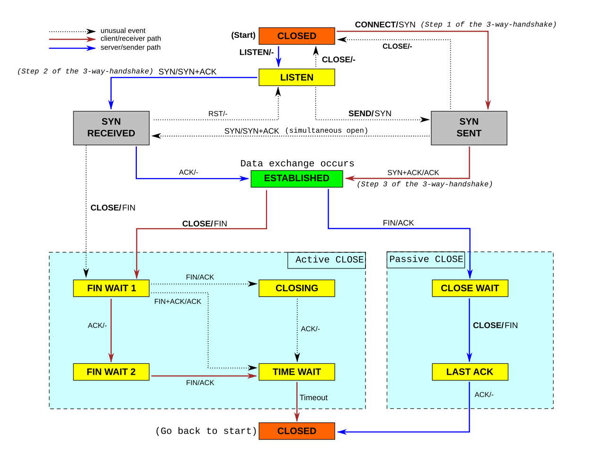

Network
ip link listip address showip neigh showARP tableip route show
Default gateway is know throught the word via in the output.
OSI
| Userspace | |
| Layer 7 | Application |
| Layer 6 | Presentation |
| Layer 5 | Session |
| Kernel | |
| Layer 4 | Transport |
| Layer 3 | Network |
| Layer 2 | Data Link |
| Physical | |
| Layer 1 | Physical |
The 7 layer model is outdated, in preference of the 4 layer model. The only important legacy is the numbering system.
Routing Table
A list of every Layer 3 network the router knows about and how to get there.
ip rule list lists the rules.
By default there are 3 tables: main, local and default. ip tool modifies main and local.
ip route list table main
route tables are in /etc/iproute2/rt_tables.
ip route get <ip> shows kernel's routing for an ip.
A router has a Forwarding Information Base (FIB) and a Routing Information Base (RIB). A router uses the RIB (in the Control Plane) to determine optimized, best routing rules.
Note: FIB is not the same as routing table. A routing table maps IPs to a route - a FIB knows which headers to put on the packet.
Example
echo 200 John >> /etc/iproute2/rt_tables
creates a table John.
ip rule add from 10.0.0.10 table John
creates a rule for John table.
Now ip rule ls will also list
32765: from 10.0.0.10 lookup John
IP
These IPs are reserved for private use (RFC 1918)
10.0.0.0 - 10.255.255.255 (10/8 prefix)
172.16.0.0 - 172.31.255.255 (172.16/12 prefix)
192.168.0.0 - 192.168.255.255 (192.168/16 prefix)
Similar for IPv6 is RFC 4193.
loopback 127.0.0.1 address is so that the system can talk to itself and do self diagnostics.
Random commands
sudo ss -nltpu
nstat
DHCP
UDP, then Port 67 and 68 unicast.
- DHCP Discover (broadcast)
- DHCP Offer (broadcast beacuse no ip assigned yet): network information such as client ip, subnet mask, default gateway ip, dns ip, ip lease time, dhcp server ip
- DHCP Request: approves the ip
- DHCP Ack (broadcast) with same information as in offer
dhcpd deprecated in favor of kea.
DNS
DNS - Domain Name System. Communicates on port 53.
Traditionally resolvconf, but replaced with systemd-resolved.
On Ubuntu /etc/resolv.conf is a link to /run/systemd/resolve/stub-resolv.conf.
systemd-resolved.service
resolvectl status
DHCP is to dynamically get an IP. It communicates on ports 67 and 68.
If DHCP, then DNS server will be set automatically.
dhclient
letsencrypt and ACME
letsencrypt uses ACME protocol (RFC 8555).
Network Interface
Each connection to a node is called a "network interface". Linux gives these names like "eth0". ip a lists them.
The first of theese lo (loopback) represents the linux host itself.
UPmeans that the kernel thinks the interface is upLOWER_UPmeans that we have established a link at the physical layer; an electrical signal.
Protocols
- TCP
- UDP
- ICMP
- BGP for updating routing tables (Bird)
CS144
Biderectional, reliable byte stream.
Byte Stream Model.
HTTP document centric. Verbs and folder structure.
Packets: data and header.
4 layer model
| Application | Biderectional reliable byte stream between two applications | HTTP, SMTP, SSH, FTP |
| Transport | Guarentees correct, in-order delivery of data end-to-end. Controls congestion | TCP, UDP, RTP |
| Network | Delivers datagrams end-to-end. Best-effor - no guarantees | Must use IP |
| Link | Delivers data over a single link | Ethernet. WiFi, DSL, 3G |
A router uses a Forwarding Table.
Packet switching: Independently for each arriving packet, pick its outgoing link. If the link is free, send it. Else hold the packet for later.
Flow: A collection of datagrams belonging to the same end-to-end communication.
Connection: ?
Making the Network Layer Work
- The IP protocol
- Creation of IP datagrams
- hop-by-hop delivery from end to end
- Routing Tables
- Algorithm to populate forwarding tables
- ICMP
- Communicates network layer information between end hosts and routers
- Reports error conditions
- Helps in diagnosing problems
IP
- Datagram
- Unreliable
- Best effort
- Connectionless
IP makes no guarantees; that is the concern of the transport layer.
IP Service Model:
- Tries to prevent looping forever (TTL)
- Will fragments if they are too long
- Uses a header checksum to reduce chances od delivering datagram to wrong destination
- Allows for new versions of IP
- Allows for new options to be added to header
Bit 0
0 1 2 3
0 1 2 3 4 5 6 7 8 9 0 1 2 3 4 5 6 7 8 9 0 1 2 3 4 5 6 7 8 9 0 1
+-+-+-+-+-+-+-+-+-+-+-+-+-+-+-+-+-+-+-+-+-+-+-+-+-+-+-+-+-+-+-+-+
|Version| IHL |Type of Service| Total Length |
+-+-+-+-+-+-+-+-+-+-+-+-+-+-+-+-+-+-+-+-+-+-+-+-+-+-+-+-+-+-+-+-+
| Identification |Flags| Fragment Offset |
+-+-+-+-+-+-+-+-+-+-+-+-+-+-+-+-+-+-+-+-+-+-+-+-+-+-+-+-+-+-+-+-+
| Time to Live | Protocol | Header Checksum |
+-+-+-+-+-+-+-+-+-+-+-+-+-+-+-+-+-+-+-+-+-+-+-+-+-+-+-+-+-+-+-+-+
| Source Address |
+-+-+-+-+-+-+-+-+-+-+-+-+-+-+-+-+-+-+-+-+-+-+-+-+-+-+-+-+-+-+-+-+
| Destination Address |
+-+-+-+-+-+-+-+-+-+-+-+-+-+-+-+-+-+-+-+-+-+-+-+-+-+-+-+-+-+-+-+-+
| (Options) | (Padding) |
+-+-+-+-+-+-+-+-+-+-+-+-+-+-+-+-+-+-+-+-+-+-+-+-+-+-+-+-+-+-+-+-+
IPv4 Datagram
IHL: Header Length
Principle: Layering
Is the name we give to the organization of the system into a number of functional components or "layers". Layers are hiearchial and communicate sequentially. Ie, each layer has only an interface to the layer directly above/below.
Each layer provides a service and abstracts it in an interface for the layers above.
Layering creates
- enables modularity (breaks down into smaller more manageable modules)
- well-defined service (provides interface towards layer above)
- reuse (layers below can be reused)
- separation of concerns (caring about its own job without caring how other layers do theirs)
- continuous improvement
Principle: Encapsulation
When combining layering and packet switching.
Endianess
- LSB Least Significant Byte or Little-Endian
- MSB Most Significant Byte or Big-Endian
Network packets are Big-Endian.
Netmask
Netmasks tells you witch IPs are local, or if packets needs to go through a router.
CIDR Classless Inter-Domain Routing has powers of 2.
IANA is responsible of giving out /8s to RIRs.
Router
A router have many links. To devcide on which link to forward packets, it uses Longest Prefix Match. This is used to decide which link to take in a Forwarding Table. A Forwarding Table consists of two parts: a CIDR entry, and a next-hop for that CIDR entry. The default route is the least specific match.
ARP
Hosts needs to keep a mapping between MAC address and IP address.
TCP
3-way-handshake:
- SYN
- SYN + ACK
- ACK
A stream of bytes are delivered using TCP segments.
Teardown:
- A sends FIN to B
- B continues to send Data + ACK (if it needs to)
- B sends FIN
- A sends ACK
| Property | Behavior |
|---|---|
| Stream of bytes | Reliable byte delivery service |
| Reliable delivery |
|
| In-sequence | Data delivered to application in sequence transmitted |
| (Congestion Control) | Controls network congestion |
0 1 2 3
0 1 2 3 4 5 6 7 8 9 0 1 2 3 4 5 6 7 8 9 0 1 2 3 4 5 6 7 8 9 0 1
+-+-+-+-+-+-+-+-+-+-+-+-+-+-+-+-+-+-+-+-+-+-+-+-+-+-+-+-+-+-+-+-+
| Source Port | Destination Port |
+-+-+-+-+-+-+-+-+-+-+-+-+-+-+-+-+-+-+-+-+-+-+-+-+-+-+-+-+-+-+-+-+
| Sequence Number |
+-+-+-+-+-+-+-+-+-+-+-+-+-+-+-+-+-+-+-+-+-+-+-+-+-+-+-+-+-+-+-+-+
| Acknowledgment Number |
+-+-+-+-+-+-+-+-+-+-+-+-+-+-+-+-+-+-+-+-+-+-+-+-+-+-+-+-+-+-+-+-+
| Data | |C|E|U|A|P|R|S|F| |
| Offset| Rsrvd |W|C|R|C|S|S|Y|I| Window |
| | |R|E|G|K|H|T|N|N| |
+-+-+-+-+-+-+-+-+-+-+-+-+-+-+-+-+-+-+-+-+-+-+-+-+-+-+-+-+-+-+-+-+
| Checksum | Urgent Pointer |
+-+-+-+-+-+-+-+-+-+-+-+-+-+-+-+-+-+-+-+-+-+-+-+-+-+-+-+-+-+-+-+-+
| [Options] |
+-+-+-+-+-+-+-+-+-+-+-+-+-+-+-+-+-+-+-+-+-+-+-+-+-+-+-+-+-+-+-+-+
| :
: Data :
: |
+-+-+-+-+-+-+-+-+-+-+-+-+-+-+-+-+-+-+-+-+-+-+-+-+-+-+-+-+-+-+-+-+
TCP packet
The 5-tuple: (src addr, src port, dst port, dps addr, protocol) is a globally unique identifier of the connection. There is however a small chance that it could overlap a previous connection that has lingered on the net (eg in a router's buffer), therefore TCP also sends an initial sequence number (ISN) to minimize the chance of an ID-overlap.
UDP
0 7 8 15 16 23 24 31
+--------+--------+--------+--------+
| Source | Destination |
| Port | Port |
+--------+--------+--------+--------+
| | |
| Length | Checksum |
+--------+--------+--------+--------+
|
| data octets ...
+---------------- ...
User Datagram Header Format
UDP checksum includes pieces of information from the IP layer, thus violating the layering principle. The upshot is that that UDP protocol can detect if datagrams were delivered to the wrong destination.
| Property | Behavior |
|---|---|
| Connectionless Datagram Service | No connection established. Packets may show up in any order. |
| Self contained datagrams | |
| Unreliable delivery |
|
UDP prvides a simple datagram serice between processes. It is mostly used in cases where the datagram is self contained, eg DNS, NTP and DHCP.
ICMP
Internet Control Message Protocol.
Transport layer protocol.
Used by ping and traceroute.
| Property | Behavior |
|---|---|
| Reporting Message | Self-contained message reporting error |
| Unreliable | Simple datagram service - no retries |
Traceroute
ICMP error message data takes the IP header and the first 8 bites of the IP payload. It then adds the headers Type and Code.
Client sends an UDP message with TTL set to 1. The next hop will return an ICMP message with the IP headers and the first 8 bytes of the original message - this information is enough for the client to figure out which was the original UDP message. The client continues to do this with increasing TTL. When reaching the host the client has deliberately chosen a strange port, so that the host will return an ICMP message "port unreachable".
End-to-End Principle
First described by Saltzer, Reed and Clark in 1984. Two principles: Weak and Strong.
The weak principle says that the network can only provide extra features if it has information about what the endpoints wants to achieve. Eg security can only be done correctly if the end applications does it.
The string principle says that nothing extra should be done in the network. "The network's job is to transmit datagrams as efficiently and flexibly as possible. Eerything else should be done at the fringes..." - RFC 1958
The Strong End-to-End Principle makes extending network is easier (SOLID).
Error Detection: 3 schemes
At a hight level, error detection bits are calculated over the payload data, and is then appended or prepended to the payload.
Networks in general uses 3 different error detection algorithms:
- Checksums adds up all the bytes (TCP and IP)
- fast and easy to compute
- not robust
- CRC, Cyclic Recundancy Codes (Ethernet)
- A CRC of length c can detect any 2 bit errors, any burst of errors < c bits long, any odd number of errors.
- MAC, Message Authentication Codes (TLS)
- combines the message with some secret information to generate a value
- robust to malicious modifications
- any 2 messages have 2^(-c) chance of having the same code
- Ceyptographically strong; not good for detection errors
Finite State Machine (FSM)
Commonly used when specifying network protocols and systems.
A state is a particular configuration of the system. The system can only be in 1 state.
Edges define how to transition between states. It includes information about events causing state transition, and actions taken on state transition.

Flow Control
Don't send more packets than receiver can process. Receiver gives sender feedback.
Two basic approaches:
- Stop and wait
- Sliding window
Stop and Wait
At most 1 packet in flight at any time.
Reciever recieves data and sends ACK. Sender sends data, then waits for ACK until sending next. If no ACK is received until a timeout, it sends the packet again.
A bad scenario is if the ACK get received after the timeout, which triggers both a resend, and a send of new data. If one of those messages gets lost, and only one ACK is received from those, this could result in duplicates.
1-bit counter is an approach to handle this scenario, but it is only reliable if the network does not duplicate the package and packets are not delayed multiple timouts.
Sliding Window
- A generalization of stop-and-wait: allow multiple un-acked segments.
- Bound on number of un-acked segments, called window.
- Sliding Window can keep the pipe full, ie utilizing the receiver's full potential.
- Uses cumulative acknowledgments. For sender:
Every segment has a sequence number SeqNo.
Sender maintains 3 variables:
- SWS: Send Window Size
- LAR: Last Acknowledgment Received
- LSS: Last Segment Sent
Sender maintains the invariant
(LSS - LAR) =< SWS
Sender advances LAR on new acknowledgment. It cannot send LSS greater than SWS + LAR.
Receiver maintains 3 variables:
- RWS: Received Window Size
- LAS: Last Acceptable Segment
- LSR: Last Segment Received
Recceiver maintains the invariant
(LAS - LSR) =< RWS
If received packet is < LAS, send cumulative acknowledgment (ie not always the last received, but the cumulativevly last received).
Note: TCP is a sliding window protocol, but ACKs are instead next expected data, ie LAS + 1
Retransmission Strategies
Essentially 2 strategies:
- Go-back-N: one loss will lead to entire window retransmitting (pessimistic)
- Selective Repeat: one loss will lead to only that packet retransmitting (optimistic)
TCP Header
Standard TCP header is 20 bytes long.
checksum: includes part of the IP header.
Flags:
- CWR + ECE: used warn senders of congestion thereby avoiding packet drops and retransmissions.
- URG: Urgent
- ACK: Acknowldegment
- PSH: Push
- RST: Reset to sequence number
- SYN: Synchronize sequence number
- FIN: For teardown
TCP Setup and Teardown
- 3-way-handshake
- simultaneous open
- TCP state machine
Having state on both ends turns out to be more efficient.
3-way-handshake
- Active opener sends a packet with the SYN bit set with a sequence number (often randomized).
- Passive opener responds with SYN with a sequence number, it also ACKs the openers sequence number.
- Active opener responds its sequence number + 1 and ACKs passive openers sequnce number.
Simultaneous open
Both clientes know each other's port number.
- Both sides send SYN and sequence number at the same time.
- Both sides ACKs the others sequence number
Note: Simultaneous open takes 4 messages, rather than 3.
Teardown
FIN means the sender has no more data to send. But the connection is not closed until both sides has sent a FIN.
- FIN and ACKs prevoius data
- FIN and ACKs the fin
- ACKs the fin
To avoid problems if either the final ACK gets lost or the same port pair is reused, the active closer goes into TIME WAIT. It keeps the socket for twice the "maximum segment lifetime".
Let's Encrypt
2 steps
- the agent proves to the CA that the web server controls a domain.
- the agent can request, renew, and revoke certificates for that domain.
certbot is a utility that automates Let's Encrypt challanges and certificate handling.
Domain Validation
Let’s Encrypt identifies the server administrator by public key.
The Let’s Encrypt CA will look at the domain name being requested and issue one or more sets of challenges:
- Provisioning a DNS record, or
- Provisioning an HTTP resource under a well-known URI
Let’s Encrypt CA also provides a nonce that the agent must sign with its private key pair to prove that it controls the key pair.
Once the agent has completed these steps, it notifies the CA that it’s ready to complete validation.
The CA verifies the signature on the nonce, and it attempts to download the file from the web server and make sure it has the expected content.
The agent is then authorized to do certificate management for that domain.
Note: The key pair used by the agent is calleda an authorized key pair for the domain.
Obtain Certificate
The agent constructs a PKCS#10 Certificate Signing Request (RFC 2986) for Let's Encrypt CA to issue a certificate for the domain with a specified public key.
The CSR includes a signature by the private key corresponding to the public key in the CSR.
The agent also signs the whole CSR with the authorized key for the domain.
Let's Encrypt CA verifies both signatures and issues a certificate with the public key provided in the CSR.
NETCONF YANG
NETCONF
NETCONF is a protocol defined by IETF to install, manipulate and delete the configuration of network devices.
NETCONF operations are realized on top of a Remote Procedure Call (RPC) layer using an XML encoding and provides a basic set of operations to edit and query configuration on a network device.
NETCONF allows network operators to lock and unlock data stores for better control over device configuration with RPC6241.
Operations
<get><get-config><edit-config>
Datastore
- Running [REQUIRED]
- Candidate
- Start-up
YANG
YANG is a data modelling lanuguage used to model configuration data, state data RPCs, and notifications for network management protocols.
YANG was originally designed to model configuration and state data manipulated by the Network Configuration Protocol (NETCONF), NETCONF RPCs, and NETCONF notifications.
YANG structures data models into modules and submodules. YANG defines four main types of data nodes for data modeling:
- Leaf nodes
- Leaf-List Nodes
- Container Nodes
- List Nodes
When a node is tagged with "config false", its subhierarchy is flagged as state data. If it is tagged with "config true", its subhierarchy is flagged as configuration data.
TLS
TLS (formerly SSL).
TLS 1.3 RFC 8446.
TLS 1.3 is a hybrid cryptosystem
- TLS Handshake with assymetric encryptions, using ephemeral Diffie-Hellman.
- Use session keys (symmetric encryptions) for the rest of the session
Note: Symmetric encryption is much faster than assymetric.
Handshake
- Client hello: protocol version, "client random" (string of random bytes), list of cipher suites. Also parameters for calculating the premaster secret.
- Server generates master secret: creates the master secret using client random, cipher suites and a server random.
- Server hello and "Finished": the server hello includes the server's certificate, digital signature, server random and chosen cipher suite. Also sends "Finished".
- Final steps and client "Finished": client verifies signature and certificate, generates master secret. Sends "Finished".
0-RTT mode for session resumption is also supported.
Certificate Signing Request (CSR)
To obtain an SSL certificate from a Certificate Authority (CA), you must generate a Certificate Signing Request (CSR).
The information provided in the CSR is called Distinguished Name (DN). One of the fields in DN is Common Name (CN), which should be the FQDN.
CSR -> CA = SSL certificate
Generate Private Key and CSR
To create a new key and a CSR with openssl:
openssl req \
-newkey rsa:2048 \ # 2048-bit RSA key
-nodes \ # private key not encrypted with pass phrase
-keyout domain.key \
-out domain.csr
Note: -new is implied, which indicates that a CSR should be generated.
Generate CSR from Private Key
To create a CSR from existing key
openssl req \
-key domain.key \ # existing private key
-new \ # generate CSR
-out domain.csr
Genereate CSR from Certificate and Private Key
openssl x509 \
-in domain.crt \ # existing CSR
-signkey domain.key \ # existing private key
-x509toreq \ # using an X509 cert to make a CSR
-out domain.csr
Self-Signed Certificates
A self-signed certificate is not signed by a CA. A self-signed certificate is a certificate that is signed with its own private key.
Self-signed certificates should only be used if you do not need to prove your service's identity to its users.
Generate Self-Signed Certificate
openssl req \
-newkey rsa:2048 \
-nodes \
-keyout domain.key \
-x509 \ # generates self-signed when together with req option
-days 365 \
-out domain.crt # temporary CSR
Generate Self-Signed Certificate from Private Key
openssl req \
-key domain.key \ # existing private key
-new \
-x509 \
-days 365 \
-out domain.crt
Generate Self-Signed Certificate from Private Key and CSR
openssl x509 \
-signkey domain.key \ # existing private key
-in domain.csr \ # existing CSR
-req \
-days 365 \
-out domain.crt
Viewing Certificates
Certificate and CSR files are encoded in PEM format. openssl can be used to convert to and from other formats, such as DER, PKCS7, PKCS12.
To view a CSR
openssl req -text -noout -verify -in domain.csr
To view a Certificate
openssl x509 -text -noout -in domain.crt
Verify a certificate was signed by a CA
openssl verify -verbose -CAFile ca.crt domain.crt
Javascript
Operators
&&Logical AND. returns the value of the first falsey operand or the value of the last operand (if all are truthy).true && "hello"returnshello0 && "hello"returns0
||Logical OR. returns the value of the first truthy operand or the value of the last operand (if all are falsey).42 || "hello"returns420 || "hello"returnshello0 || false || ""returns""
Static import declaration
Used to import read-only live bindings from another module. The imported module will be evaluated at load time.
In order to use the import declaration in a source file, the file must be
interpreted by the runtime as a module.
If the same module is imported into multiple other modules, its code is executed only once, upon the first import. Then its exports are given to all further importers.
import declarations can only be present in modules, and only at the top-level.
There are 4 form of import decalarations
- Named import
import { export1, export2 } from "module-name"; - Default import
import defaultImport from "module-name"; - Namespace import
import * as name from "module-name"; - Side effect import
import "module-name";
Promises
Promise.all() returns a promise that waits for all of the promises in
the array to resolve and then resolves to an array of the values that these
promises produced (in the same order as the original array).
If any promise is rejected, the result of Promise.all is itself rejected.
Promise.allSettled() is same as above, but does not reject if any
promises do.
Promise.race() returns the first promise that settles (fulfilled or rejected).
Promise.any() returns the first promise that settles (only fulfilled).
Angular
Single Page Application (SPA).
Component
@Component(...)
- Define Views.
Inject the store in order to be able to gain access to the global state.
Interaction
@Input()@Output()ngOnChanges()
@Input()
Either a variable
@Input() aVariable: string;
...
[aVariable]="value"
or a setter function
aVariable: string;
@Input()
set aVariable(inputVar: string) {...}
...
[aVariable]="value"
@Output()
Emit event.
ngOnChanges()
By changing the changeDetection property, you will change when the component is re-rendered.
ngOnChanges can listen to update handling.
Lifecyle Component/Directive Hook Methods
ngOnChanges()ngOnInit()oncengDoCheck()ngAfterContentInit()oncengAfterContentChecked()ngAfterViewInit()oncengAfterViewChecked()ngOnDestroy()once
Angular only calls a directive/component hook method if it is defined.
Service
@Injectible(...)
- use
providedInto declare modulename-provider.tsthat provides it
Template
-
directive
-
binding markup
- event
- property
-
pipes
-
<ng-template> -
<ng-container>is not rendered -
<ng-content>input HTML rendered here
Module
@NgModule(...)
3 files
name.module.tsimports: things the module usesdeclarations: everything in the moduleexports: exported components
name-provider.ts, class services should assign toname-routing.ts, declares paths
Declares compilation contex for a set of modules.
Resolver
Implements Resolve interface from @angular/router module.
interface Resolve<T> {
resolve(route: ActivatedRouteSnapshot, state: RouterStateSnapshot)
: Observable<T> | Promise<T> | T
}
- Connected to a path
- Run before anything is showed and gives ready data to the component on the path. This means observables will be resolved properly.
Guard
- Run before resolvers
- Used for access verification
RxJS
async
Operators
Operators can be used in .pipe(...).
.map.switchMap.switchMapTo.combineLatest- ...
Observable
Naming convention varName$.
Is like a Promise.
.pipe(...).subscribe(...)
Note: subscribing via an async pipe will automatically unsubscribe. When manually subscribing,
unsubscribe has to be called to prevent memory leaks (e.g. in ngOnDestroy()).
Subjects
NgRx store
Global state.
store.dispatch(Action) to update state.
Reducer
- Create a new state (cannot change current state object)
- Pure functions
- no side effects
- sync
Move as much logic as possible here from component.
Selector
- filters state
- used in
.pipe()
Effect
- Listen on
.ofType(Action)and produces new Action - Must return a new Action
- async
Jest
jest.fn()- creates function mockjest.spyOn()- replace existing method of any class or imported module. Note: still calls the original function unless other implementation is providedjest.mock()- overrides whole existing module and provides its replacement
jest.fn()
A function that records calls in the .mock property.
- Can return values with
.mockReturnValueor.mockResolvedValue
jest.spyOne()
Note: .mockReturnValue() etc are shorthand notation for
.mockImplementation(...), so they also replace the implementation.
jest.mock() and jest.doMock()
import { A } from 'B';
jest.mock('B'); // hoisted
const mockA = A as jest.MockedFunction<typeof A>;
Note: jest.mock() is hoisted because module needs to be mocked before it is imported.
This means that it is not possible to use any variables in the mock.
For this reason there is jest.doMock() which is executed at place. But import statements are
also hoisted which means they need to be changed into a non-hoisted version.
import {CONSTANT_VALUE} from './constants';
jest.doMock('./myModuke', 8) => ({
doSomething: jest.fn(() => CONSTANT_VALUE),
})
);
// Class containing doSomething function
const {Class} = require('./Class');
)
Clear
jest.clearAllMocks()- clear all mock usage datajest.resetAllMocks()- clear all mock usage data and also resets implementation with newjest.fn()jest.restoreAllMocks()- restore mocks back to original implementation (Note: only applies forjest.spyOn!)
Javascript
Operators
&&Logical AND. returns the value of the first falsey operand or the value of the last operand (if all are truthy).true && "hello"returnshello0 && "hello"returns0
||Logical OR. returns the value of the first truthy operand or the value of the last operand (if all are falsey).42 || "hello"returns420 || "hello"returnshello0 || false || ""returns""
Static import declaration
Used to import read-only live bindings from another module. The imported module will be evaluated at load time.
In order to use the import declaration in a source file, the file must be
interpreted by the runtime as a module.
If the same module is imported into multiple other modules, its code is executed only once, upon the first import. Then its exports are given to all further importers.
import declarations can only be present in modules, and only at the top-level.
There are 4 form of import decalarations
- Named import
import { export1, export2 } from "module-name"; - Default import
import defaultImport from "module-name"; - Namespace import
import * as name from "module-name"; - Side effect import
import "module-name";
Promises
Promise.all() returns a promise that waits for all of the promises in
the array to resolve and then resolves to an array of the values that these
promises produced (in the same order as the original array).
If any promise is rejected, the result of Promise.all is itself rejected.
Promise.allSettled() is same as above, but does not reject if any
promises do.
Promise.race() returns the first promise that settles (fulfilled or rejected).
Promise.any() returns the first promise that settles (only fulfilled).
React
Component Lifecycle
- Triggering: Happens because of
- it is the initial render, or
- the component’s (or one of its ancestors’) state has been updated. Ie,
setfunction has been called.
- Rendering: React calls the component function. It's a recursive process in the sense that it also calls child components.
- initial: React will call the root component.
- re-render: React calls the function component whose state update triggered the render, and calculates the difference since previous render.
- Committing: React commit changes to the DOM.
- initial: React uses
appendChild() - re-render: React applies minimal nevessary operation calculated from Rendering phase.
- initial: React uses
Note: React only changes the DOM nodes if there is a difference between renders.
After these steps, the browser will repaint the screen.
useEffect hook
useEffect(() => {
<LOGIC>
return <CLEANUP FUNCTION>
}, [<DEPENDENCIES>])
useEffect(() => {...})runs on every renderuseEffect(() => {...}, [])runs on first renderuseEffect(() => {...}, [x, y])runs whenxoryrenders with a new value
useState hook
const [something, setSomething] = useState(<INITIAL STATE>)
Note: State variable something is not updated until next render. Ie, the new value is not directly present in the current snapshot of the component after setSomething().
ESLint and Prettier
Prettier is for formatting rules. ESLint is for code quality rules.
- eslint-config-airbnb is a base config for react.
npx install-peerdeps --dev eslint-config-airbnb - eslint-config-prettier turns off rules that conflict with prettier, needs to be last in extends
- eslint-plugin-prettier turns prettier changes inte ESLint rules (not neccessary)
npx install-peerdeps --dev eslint-config-airbnb
npm install --save-dev --save-exact prettier
.eslinttrc.json
{
"extends": [
"airbnb",
"prettier" // eslint-config-prettier
]
}
Note: eslint.config.js is used for eslint >= v8
formatting
npx prettier . --write
npx eslint . --fix
Python
python -m module_name
Does 2 things:
It sets the name of module_name will be main, ie __name__ will be __main__.
Prevents path/to in module_name to be added to PYTHONPATH.
The difference between python -m path.to.module_name and python path/to/module_name.py is that the latter will
add path/to to the front of PYTHONPATH, potentially creating conflicting import names (where the local will be chosen).
Structure, src-layout
├─ src
│ └─ packagename
│ ├─ __init__.py
│ └─ ...
├─ tests
│ └─ ...
├─ requirements.txt
└─ setup.py
Use pip and venv.
cf. flat-layout
Virtual Environment
python -m venv .venv
source .venv/bin/activate
...
deactivate
activate sets pip's path to the dir selected, this can be shown with pip -V.
Virtual environments does not litter the global pip installs.
NOTE: always use python -m pip ... for pip operations in a venv.
Development Mode (a.k.a. “Editable Installs”)
Setuptools instruct the Python interpreter and its import machinery to load the code under development directly from the project folder without having to copy the files to a different location on disk. Making changes to the source code take place in immediately, without requiring a new installation.
python -m venv .venv
source .venv/bin/activate
pip install --editable .
Distribution Package
Requirements
buildsetuptoolsbuild backend- pyproject.toml with
build-backendspecified
build
- sdist: unbuilt
- wheel: build
Install build
pip install --upgrade build
which also install setuptools (build backend).
python -m build
pyproject.toml
pyproject.toml tells the build frontend which build backend to use.
Three possible tables:
[build-system][project][tool]
Fields can be static or dynamic. When a field is dynamic, it is the build backend’s responsibility to fill it. Consult your build backend’s documentation to learn how it does it.
[build-system]
build-backend: specifies which build backend to use.requires: list of dependencies needed to build the project – typically just build backend package.
[project]
example:
[build-system]
requires = ["setuptools >= 61.0"]
build-backend = "setuptools.build_meta"
Source
AWS
Compute
ECS
Instance families:
- general purpose
- compute optimized
- memory optimized
- accelerated computing
- storage optimized
Scaling
Autoscaling additional instances.
Elastic Load Balancing (ELB) routes traffic.
Lambda
For less than 15 minutes.
Deployment
Deployment packages are used to deploy a lambda.
2 types of deployment packages are supported:
- .zip archive (uploaded to S3 or local machine)
- container image (uploaded to Amazon ECR)
Network & Security
- Route 53 - DNS
- CloudFront - CDN
- Virtual Private Cloud (VPC)
- Security Groups
- Internet Gateway (IGW)
- Public/private subnets
- Elastic Load Balancer (ELB)
VPC
- Comes with a default customizable network access control list (ACL)
- Can have private and public subnets
IGW
Connects VPC to internet. Attach to VPC and specify as a target in subnet route table.
- Enables internet connection of resource with public IP addresses in subnets that are public
- Routes traffic to subnet according to routing table
Subnet
Public and private grouping of resources. A range of IP addresses in a VPC.
Subnets must be connected to an ACL, if not it will be associated with the default ACL of the VPC.
Get resources in subnet
aws ec2 describe-network-interfaces --filters Name=subnet-id,Values=subnet-id-here | grep Description
ELB
Elastic Load Balancing. To connect with a VPC; specify one or more subnets for the load balancer nodes.
Register listerners (a process that checks for connection requests) with a specified target group and conditions. When conditions are met, traffic is forwarded to the target group.
- Monitors health of registred targets and only routes to healthy
Security Group
A Security Group acts as a virtual firewall. Inbound and outbound rules specify which access are allowed. Unless specifically allowed, it defauls to denied.
- Supports only allow rules, not deny rules
- Stateful: always allows response traffic (in both directions)
- Operates at instance level (applies to instance only if associated)
- When resources are associated with multiple Security Groups, their rules are aggregated into one set of rules
ACL
- Operates at subnet level (applies to all instances in the subnet)
- Supports allow rules and deny rules
- Stateless (return traffic must be explicitly allowed by rules)
Messages
SQS
Simple Queue Service.
Send, store, and receive messages between software components, without losing messages or requiring other services to be available.
SNS
Simple Notification Service.
Publish/subscribe model. Publish to a topic. Subscribe to topics.
Container Orchestration Tools
Docker containers.
ECS
Elastic Container Service.
EKS
Elastic Kubernetes Service.
Fargate
Run containers on top of serverless compute platform for ECS or EKS.
API Gateway
- Websocket (Stateful)
- HTTP
- public REST API
- private REST API
Authentification and Authorization
3 options for Authentification:
- IAM
- Custom Lambda
- Cognito
Proxy vs Integration
Lambda-proxy sends request from API Gateway directly to lambda without modifications.
In a Lambda integration the request and response can be modified in the API Gateway using Velocity Template Language (VTL).
Method Request: request originated from the client.
Integration Request the transformation that you can do with API Gateway. The request body can be transformed as per your body mapping template.
Integration Response: This is where you can assign appropriate status code and do response transformation, if present. After transformation, the response is sent to client.
AWS Certified Cloud Practitioner Foundational (CLF-C01)
Order of Certificates
- AWS Certified Cloud Practitioner Foundational (CCP)
- AWS Certified Solutions Architect Associate (CSAA) most in demand
- AWS Certified Developer Associate overlaps CSAA
- AWS Sysops Administrator Associate
Module 1: Intro
Bird's eye view of AWS.
4 domains:
- 26% Domain 1: Cloud Concepts
- 25% Domain 2: Security and Compliance
- 33% Domain 3: Technology
- 15% Domain 4: Billing and Pricing
Exam:
- Passing ~700/1000
- 65 questions (50 scored, 15 unscored)
- 1.5 hours
- Valid for 36 months
Client Server Model: a client makes a request to a server.
Cloud Computing
Cloud Computing: The on-demand delivery of IT resources over the internet with pay-as-you-go pricing.
- Trade upfront expenses for variable expenses
- Don't pay for data center maintenance
- Don't need to guess capacity
- Benefit from economies of scale
- Flexibility increases speed and agility
- Easy to go global
Module 2: Compute in the Cloud
EC2
Multitenancy - Hypervisor - VMs.
Supports vertical scaling.
Instance family types to optimize either memory, cpu, storage or networking capacity.
- General purpose,
MandT - Compute optimized (eg batch processing),
C - Memory optimized,
RandX - Accelerated computing (utilize hardware accelerators; coprocessors),
PandG - Storage optimized (> 10k IOPS),
IandD - HPC optimized,
Hp
Pricing
- On-demand (per hour or per second)
- Savings plan (usage above committed usage is charged on-demand prices. 1 or 3 year term)
- Reserved instances (1 or 3 year term, for steady state workload)
- Spot instances (can be reclaimed with 2 min warning, should be able to handle interruptions)
- Dedicated host (no shared tenancy)
Scalability and Elasticity
Scaling
Vertical scaling: scale up / scale down
Horizontal scaling: scale in / scale out.
Amazon EC2 Auto Scaling provides automatic horizontal scaling.
- Dynamic scaling responds to changing demand
- Predictive scaling schedule
Load Balancing
Elastic Load Balancing, (ELB)
- Regional construct (highly available)
- Distributes traffic across multiple resources
- Scales automatically
Messaging and Queueing
If services communicate directly, that is a Tightly Coupled Architecture; errors in application B will propagate to application A. Loosely Coupled Architecture means that single failures does not cause cascading failures. Queues and buffers solve this.
Simple Queue Service (SQS)
- Send/Recieve
- Store
- Supports any volume
- Scale automatically
Simple Notification Service (SNS)
- Publish/Subscibe model (SNS Topic)
Monoliths and Microservices
- Applications consists of Components
- Components need to communicate
- Monoliths promote tight coupling
- Microservices are loosely coupled by design
Additional Compute Services
Serverless: You cannot see or access the underlying infrastructure.
Lambda
- Scale automatically
- <15 min
- zip or Docker container
Container Orchestration Tools
Container (Docker) Services.
- Elastic Container Service (ECS)
- Elastic Kubernetes Service (EKS)
The host is an EC2 instance.
Fargate: Serverless compute platform for ECS or EKS, allows to run containers on top of a Serverless compute platform. An alternative to running containers directly in an EC2 machine.
Module 3: Global Infrastructure and Reliability
Edge Locations are not the same as Regions. Regions can push their content to several edge locations.
AWS Local Zones: for even more low-latency requirements.
Regions and Availability Zones
Regions are geographically isolated from one another without an explicit approve.
Regions can be connected with high speed fiber network.
Availability Zone (AZ): One data center inside a region.
Best Practice: Run across at least 2 AZs for mitigating effect of downtime. Any service marked with Regionally scoped service are already doing this by default (eg ELB, SNS, SQS).
Factors when deciding a region:
- Compliance with data governance and legal requirements
- Proximity
- Feature availability
- Pricing
AWS Outposts: Run AWS services locally.
Edge Locations
Content Delivery Network (CDN): Cache data close to client.
Amazon CloudFront is the CDN in AWS.
Route 53: DNS server.
Provisioning
When interacting with AWS services, everything is an API call.
- AWS Management Console (Browser)
- AWS Command Line Interface (CLI)
- AWS Software Development Kits (SDK)
- Other tools (eg CloudFormation, Elastic Beanstalk)
AWS Elastic Beanstalk: Helps provision EC2 based environments.
AWS CloudFormation: IaC tool.
Module 4: Networking
VPC

Virtual Private Cloud (VPC): Provision logically isolated section. Resources in VPC can be public facing or private.
Subnets: Chunks of IP adresses in the VPC that allows to group resources together. They can be public or private.
Subnets plus networking rules control whether resources are publicly, or privately available.
- For public traffic an Internet Gateway (IGW) must be attached to allow traffic in and out of VPC to the public internet.
- For private traffic Virtual Private Gateway is attached using VPN (public encrypted traffic to VPC).
- AWS Direct Connect physical private line to VPC.
Note: A VPC can have many different gateways, but connected to different Subnets.
Packages entering and leaving a VPC gets checked against a Network access control list (Network ACL). Network ACL only checks if package can cross a subnet boundary, and not what it can reach inside the subnet.
Security Groups blocks all incoming traffic to a group of resources (by default), but allows all outgoing traffic. Security groups are stateful in the sense that they allow responses regardless of SG rules.
Note: Security Group is stateful, Network ACL is stateless.
Global Networking
DNS Route 53 routing policies:
- Latency-based routing
- Geolocation DNS
- Geoproximity routing
- Weighted round robin
CDN CloudFront cache at an edge location.
Module 5: Storage and Databases
Elastic Block Storage (EBS)
Block level storage.
EC2 machines might have local storage called Instance Store Volumes. When the image stops, that storage will be deleted (because Instance Store Volumes are specific to the host machine which might change).
Elastic Block Store (EBS). Written data is persisted between starts and stops of the EC2 instance. Incremental backups are supported (snapshots).
- Attached to EC2
- Scoped to an AZ
S3
Object storage.
- Stores data as objects. Each object consists of data, metadata, and a key.
- 5 TB object size limit
- Support versioning of objects
- Support staging data between different tiers
- Regionally distributed
Types:
- S3 Standard stored in min 3 AZ
- S3 Standard-Infrequent Access (S3 Standard-IA) stored in min 3 AZ. Less frequent but rapid access. Lower storage price, higher retrieval price.
- S3 One Zone-Infrequent Access (S3 One Zone-IA) stored in 1 AZ but lower cost, used for reproducable data.
- S3 Intelligent-Tiering Automatically moves objects between IA and standard tiers.
- S3 Glacier Flexible Retrieval for less frequent access, slow retrieval.
- S3 Glacier Instant Retrieval same retrieval as S3 Standard.
- S3 Glacier Deep Archive lowest-cost storage, data retrieval from 12 to 48 hours. Objects replicated min three geographically dispersed AZs.
- S3 Outposts storage on-premises AWS Outposts environment
S3 Lifecycle management: Move data automatically between tiers
EBS vs S3
S3 is optimized for write once, ready many. Each object is immutable and changes needs to upload the whole object again. EBS is not as optimized for reading, but it supports delta changes to files.
Elastic File System (EFS)
Managed Linux file system.
Use case a large number of services and resources need to access the same data at the same time.
- Multiple instances can access data in EFS at the same time.
- Automatic scaling
- Regional resource
Relational Database Service (RDS)
Managed service. Supports
- Automated patching
- Backups
- Redundancy
- Failover
- Disaster recovery
- Encryption
Six available database engines
- Aurora
- MariaDB
- MySQL
- PostgreSQL
- Oracle Database
- Microsoft SQL Server
Support Lift and Shift Operation to move on premise DB to the cloud.
Aurora
-
MySQL
-
PostgreSQL
-
Data replication
-
Up to 15 read replicas
-
Continuous backup to S3
-
Point in time recovery
Dynamo DB
NoSQL, key-value.
- Purpose built
- Millisecond response time
- Highly scalable
- Fully managed
Redshift
Data warehouse as a service.
For historical analytics. Big data, allows to collect data from many sources.
Database Migration Service (DMS)
Uses cases:
- Migrating a database to EC2 or RDS
- Database migratiom (Test against production data)
- Database consolidation (Combining several DBs into one)
- Continuous database replication (Sending ongoing copies of data to other sources)
Homogenous
Source can be:
- on-premises
- EC2
- RDS
Target can be:
- EC2
- RDS
Hetrogenous
First use AWS Schema Conversion Tool, then use DMS.
Additional Database Services
- Netptune: Graph database
- Quantum Ledger Database (QLDB): complete immutable history
- Managed Blockchain: distributed ledger
- ElastiCache: caching layer on top of DB. Supports Redis and Memcached
- DynamoDB Accelerator (DAX): in-memory cache
Module 6: Security
AWS Shared Responsibility Model: Customers are responsible for security in the cloud, AWS is responsible for security of the cloud.
Identity and Access Management (IAM)
The user that creates an AWS account becomes the root user and has access to everything. Should turn on MFA and use IAM Users instead.
- IAM Policy: JSON object that explicitly allows or denies access to resources. EPARC.
- IAM User: Identity, represents person or application that interacts with AWS services and resources. Starts with no permissions.
- IAM Group: Collection of IAM Users.
- IAM Role: Temporal permissions assumable by a trusted entity.
Best practice: Follow principle of least privilege. Use MFA.
AWS Organizations
AWS Organizations automatically creates a root, which is the parent container for all the accounts in the organization.
- Centralized management of accounts.
- Consolidated billing
Organizational Units (OU): Groupings of accounts. Similar to IAM Groups.
Service Control Policies (SCPs): Apply permissions to root, member account or an OU. Allows to place restrictions on services, resource and API actions allowed.
Compliance
- AWS Artifacts access to AWS security and compliance reports.
- AWS Compliance
DDoS attacks
Some types of attacks
- UDP Flood
- Fake return address.
- Solution: Security Groups
- HTTP Level Attack
- SlowLoris Attack
- Faking a slow connection
- Solution: Elastic Load Balancer
AWS Shield: Shields against DDoS attacks.
- Standard: no cost, real time analysis of malicious traffic
- Advanced: paid service, can handle more sophisticated attacks. Integrates with other services. Integrates with AWS WAF.
AWS WAF: Web Application Firewall. Allows monitoring of network requests. Works together with CloudFront and ELB. Uses a web access control list (ACL) to block IP addresses.
Additional Security
AWS Key Management Service (AWS KMS): Create, use, and manage cryptographic keys.
- Encryption at rest
- Encryption in transit
AWS Inspector: Automated security assessment. Checks applications for security vulnerabilities and deviations from security best practices.
AWS GuardDuty: Threat detection by monitoring network activity and account behavior.
Module 7: Monitoring and Analytics
Monitoring: Observing systems, collecting metrics, and then using data to make decisions.
AWS CLI
To setup a default user
aws configure
To setup a profile
aws configure --profile <profile name>
AWS Access Key ID and AWS Secret Access Key are stored in
~/.aws/credentials. These are associated with an IAM user or role.
All other configuration is stored in ~/.aws/config.
Get default user credentials
aws sts get-caller-identity
aws sts get-caller-identity --profile <profile name>
List profiles
aws configure list-profiles
Files
- ~/.aws/config non-sensitive information
[default]
region = eu-north-1
output = yaml
- ~/.aws/credentials sensitive information
[default]
aws_access_key_id = <access key>
aws_secret_access_key = <secret access key>
Profiles
Use
--profileflag, orAWS_PROFILEenvironment variable.
Eg,
aws s3 ls --profile profile_name
Add
[profile profile_name]
to ~/.aws/config, and
[profile_name]
to ~/.aws/credentials.
Note: [profile ...] in ~/.aws/credentials file.
Cognito
- User Pools
- Identity Pools
Access Token is not the same as Identity Token.
User Pool Lambda Triggers
CognitoUserPoolLogicalName:
Type: 'AWS::Cognito::UserPool'
Properties:
...
LambdaConfig:
CreateAuthChallenge: String
CustomEmailSender: CustomEmailSender
CustomMessage: String
CustomSMSSender: CustomSMSSender
DefineAuthChallenge: String
KMSKeyID: String
PostAuthentication: String
PostConfirmation: String
PreAuthentication: String
PreSignUp: String
PreTokenGeneration: String
UserMigration: String
VerifyAuthChallengeResponse: String
DynamoDB
- NoSQL
- key-value
Supports AWS::Backup
CAP Theorem
CAP
- Consistency (same across all replication points before returning result)
- DynomDB supports strongly or eventually consistent reads
- Availability
- Partition Tolerance
Of these 3, we can only have 2 at the same time.
NoSQL
No cross table relationships
3 main types:
- Key-value (DynamoDB)
- Column-based (eg Cassandra)
- Document-based (eg MongoDB)
Design
Queries first
Design of DynamoDB tables requires query patterns to be evaluated first.
Note: DynamoDB does not support joins.
In order to limit the number of round trips, the data must be ordered in a way to minimize the number of calls to the database.
Partitioning
DynamoDB is designed to partition the underlying data into different storages.
The partitioning is guided by the partition key, therefore it is very important to design the partition key so that the data is distributed equally. Otherwise you can get hot partitions that impede the performance.
Table
A collection of 0 or more items. Items can be queried through their keys. Items are made up of their attributes
primary key (or partition key) is mandatory.
sort key is optional.
Note: Primary key or sort key can be duplicated, but not both at the same time.
Extra keys are attributes.
By default queries are only supported on partition and sort key. To support queries on other keys, secondary indexes are needed.
Item types
S– StringN– NumberB– BinaryBOOL– BooleanNULL– NullM– MapL– ListSS– String SetNS– Number SetBS– Binary Set
Item
- Max size is 400 kB
partition keymin length is 1 byte, max length 2048 bytessort keymin length is 1 byte, max length 1024 bytes
Items need not have the same number of attributes.
Query
Find items based on
partition keyvalue alone, orpartition keyvalue andsort keyvalue in cases where sort key is defined
Scan
aws dynamodb scan --table-name <TABLE>
Retrieves all items in a table. More costly than a query.
Scans can be supplied with the --max-items <NUMBER> flag.
Note: filters will happen after a scan is complete, so it will not make the scan more efficient.
Note: Scans only returns data up to a limit (by default 1MB).
Note: Scans are by default paginated.
Secondary Index
Basically creates a copy of the table with an alternate key schema.
- Local secondary index, allows to create an alternate sort key
- Global secondary index, allows to create an alternate partition and sort key
BatchGetItem & BatchWriteItem
Each write in BatchWriteItem is atomic, but the command as whole is not.
BatchGetItem is eventually consistent by default.
Note: You will be provided with a list of unprocessed items.
AWS CLI
aws dynamodb list-tables
aws dynamodb put-item --table-name <TABLE> --item file://<JSON FILE>
aws dynamodb delete-item --table-name <TABLE> --key file://<JSON FILE>
aws dynamodb query --table-name <TABLE> --key-condition-expression ... --expression-attribute-values file://<JSON FILE>
Static Website

Public - Private key pair
Generate by
openssl genrsa -out private_key.pem 2048
openssl rsa -pubout -in private_key.pem -out public_key.pem
- private key goes into SSM for use by Lambda to sign the cookie
- public key goes to CloudFront (
AWS::CloudFront::PublicKeyandAWS::CloudFront::KeyGroup)
CloudFront Distribution
Origins: Locations where content is stored, and from which CloudFront gets content to serve to viewers.CacheBehaviors: Each cache behavior specifies the one origin from which you want CloudFront to get objects.
Cookie Lambda@Edge
Limitations
Lambda@Edge
- does not support environment variables.
- must be in us-east-1
- cannot be in VPC
- cannot be referenced with
$LATEST$; must use a version number
LambdaFunctionAssociations: 'viewer-request'
Needs to return Set-Cookie header with values
CloudFront-PolicyCloudFront-SignatureCloudFront-Key-Pair-Id
IAM - Identity and Access Management
Default access is "Deny".
IAM Identities
There are 3 types of IAM identities:
- IAM user
- IAM user group
- IAM role
Note: IAM identities live inside an AWS Account, which is a boundary - by default, no access is given to identities outside the account (but can be allowed).
Note: The root user has access to everything and cannot be limited by IAM policies.
IAM User
An IAM user represents a the person or service that interacts with AWS. IAM users have long-term credentials.
IAM Role
An IAM role is not associated with an identity, and has no long-term access keys (as users do). IAM roles are assumed by trusted entities, which gives that entity the permissions of the role temporarily (assumed role expires).
Note: Assuming a role gives credentials that last between 15 minutes and 36 hours.
IAM Group
An IAM group is a collection of users.
Best practice: Prefer roles over users when possible.
Best practice: Prefer attaching a user to a group over giving credentials directly to the user.
IAM Policy (E-PARC)
Policies are attached to IAM identities (users, groups and roles).
Required parts are
- Effect: statement result; "Allow" or "Deny"
- Action: activity or call the statement covers
- Resource: object or objects (by ARN) the statement covers
{
"Version" "2012-10-17"
"Statement": {
"Effect": "Allow", # Allow or Deny
"Action": "ec2:RunInstances", # Describes the specific Action
"Resource": "*" # ARN it applies to (here: all EC2 instances)
}
}
Note: Action and Resource accepts wildcards.
Optional parts are
- Principal: Specifies the principal that is allowed to access a resource.
- Condition: Specifies conditions for when a policy is in effect.
Policy Types
- Identity based policies (attached to an identity)
- Resource based policies (attached to a resource)
Resource based policies are used to attach permissions to the Principal. Identity based policies do not make use of the Principal element.
Example: IAM Policy that allows all Principals, but ony from certail IP addresses
"Principal": "*"`,
"Condition": { "IpAddress": { "aws:SourceIp": ["<IP ADDRESS>"]}}
Managed Policy vs Inline Policy
Both managed policies and inline policies can be attached to user, groups, and roles.
- A managed policy is a standalone policy that can have its own ARN. It can have a 1-to-many relationship to users, groups, and roles.
- An identity policy has a 1-to-1 relationship with a user, group or role. It is deleted when the related principal entity is deleted.
Managed policy can be created with either AWS::IAM:ManagedPolicy, or
AWS::IAM:Policy with PolicyType: Managed. The main difference is the former
is standalone with its own ARN. The latter is embedded in the stack its created
in.
IAM Evaluation Logic
- Is the user the root user -> Allow
- Is there a specific "Deny"? -> Deny
- Is there a specific "Allow" -> Allow
- -> Deny
Lambda
- 15 min runtime
Lambda@Edge
Maximum size of 1 MB.
Limitations:
- does not support environment variables
- must be in us-east-1
- cannot be in VPC
- cannot be referenced with $LATEST$ or aliases; must use a version number
- can only be triggered by certain CloudFront events
- Viewer request
- Origin request
- Origin response
- Viewer response
Linux - Systemd
systemd
- Name:
name.service
Unit File
A simple structure
[Unit]
Description=The name of the service
Wants=other services to start up
Requires=requires named service to start or fail
After=guaranteed to start after named service
[Service]
Type=simple
User=root
Group=root
Environment=SOMEVAR=someval
WorkingDirectory=/root
ExecStart=/root/my_program.sh
TimeoutSec=30s
Restart=always
RestartSec=15s
[Install]
WantedBy=multi-user.target
Unit files are stored in
/etc/systemd/system/
systemctl list-unit-files
systemctl
systemctl start name.servicesystemctl stop name.servicesystemctl enable name.servicestarts when system bootssystemctl disable name.servicedoes not start when system boots
Status
systemctl restart name.service
systemctl status name.service
Note: .service can be omitted in name.service.
Logs
journalctl -fu <service name>
where -f is short for --follow.
Users and Groups
- /etc/passwd
- /etc/group
- /etc/shadow
/etc/passwd
<user name>:x:<id of user>:<id of primary group>:<description of user>:<home dir>:<login shell>
/etc/group
<group name>:x:<id of group>:<members>
/etc/shadow
<user name>:<password hash>:<password meta data>
password hash
- If starts with ! it denotes that the account is locked
- If it is onlt an asterix * it means the user cannot be logged into with a password
Users
- normal users
- root users
- the root user
- normal users with sudo access
Create user with home directory (-m)
usermod -m <user name>
Note: prepopulated with stuf from /etc/skel.
Change shell (-s) of user
usermod -s /bin/bash <user name>
Change password of user
passwd <user name>
Lock user
passwd -l <user name>
Unlock user
passwd -u <user name>
Sudoers
Must use visudo
visudo /etc/sudoers
Groups
groupadd, groupdel
Append user to group
usermod -a -G <group name> <user name>
Debian Package
sudo apt install build-essential debhelper debmake devscripts
Do not build as root.
A Debian package is a collection of files that allow for applications or libraries to be distributed via the package management system.
The aim of packaging is to allow the automation of installing, upgrading, configuring, and removing computer programs for Debian in a consistent manner.
A package consists of one source package, and one or more binary packages.
- Binary packages contain executables, standard configuration files, other resources required for executables to run.
- Source packages contain the upstream source distribution, configuration for the package build system, list of runtime dependencies and conflicting packages, a machine-readable description of copyright and license information, initial configuration for the software, and more.
The Debian Policy specifies the standard format for a package, which all packages must follow.
The source package (.dsc) and binary packages (.deb) will be built for you by tools such as dpkg-buildpackage.
- upstream tarball: tar.gz containing software written by upstream developer.
- source package: built from upstream source.
- binary package: built from source package. Is distributed and installed.
Source Package
The simplest source package consists of three files:
- The upstream tarball, renamed according to the naming convention
- A debian directory containing the changes made to upstream source, plus all the files required for the creation of a binary package.
- A description file (with .dsc extension), which contains metadata for the above two files.
The packaging workflow (Manual)
Step 1: Rename the upstream tarball
Naming convention: <source package name>_<upstream version number>.orig.tar.gz.
The source package name should be all lower case, and can contain letters, digits, and dashes.
mv foo-1.0.tar.gz foo_1.0.orig.tar.gz
Step 2: Unpack the upstream tarball
The source should unpack into a directory of the same name and upstream version with a hyphen in between (not an underscore),
so the upstream tarball should unpack into a directory called <source package name>-<upstream version number>
foo-1.0
Step 3: Add the debian.tar.gz files
Note: Use
debmake
to create sensible template files. They need to be modified.
cd into extracted tarball and create debian/ directory, then add the following files
debian/changelogThis is the log of changes to the Debian package. It has a standard format, use thedchtool. Note: version can be eg1.9.2-4.
dch --create -v <upstream version>-<Debian version> --package <source package name>
debian/control: describes the source and binary package, and gives some information about them. Eg
Source: foo
Section: python
Priority: optional
Maintainer: noone <noone@nocomp.com>
Build-Depends: debhelper-compat (= 12),
dh-python,
python3-all,
python3-setuptools,
pybuild-plugin-pyproject
Standards-Version: 4.5.0
X-Python3-Version: >= 3.10
Package: python3-foo
Architecture: all
Multi-Arch: foreign
Depends: ${misc:Depends}, ${python3:Depends}
Description: Dummy description
Note: pybuild-plugin-pyproject is needed when using pyproject.toml file.
debian/copyrightdebian/rules: a makefile
#!/usr/bin/make -f
# You must remove unused comment lines for the released package.
#export DH_VERBOSE = 1
export PYBUILD_NAME = foo
export PYBUILD_INTERPRETERS = python3.10
%:
dh $@ --with python3 --buildsystem=pybuild
debian/source/format: it should contain the version number for the format of the source package, eg
3.0 (quilt)
Step 4: Build the package
debuild
$ debuild -us -uc
Reiterate until it works. The files will be found in parent directory ls ...
pbuilder
sudo apt install pbuilder debootstrap devscripts debian-archive-keyring
sudo pbuilder create --distribution sid --mirror http://ftp.us.debian.org/debian/ --debootstrapopts "--keyring=/usr/share/keyrings/debian-archive-keyring.gpg"
pdebuild
sudo pbuilder build ../<source file .dsc>
deb file will be under /var/cache/pbuilder/result/.
Inspect contents of deb package with
dpkg -c <.deb>
Step 5: Test the package
sudo dpkg -i ../<source package name>_<version>_<architecture>.deb
git-buildpackage
Config file at debian/gbp.conf.
- debian-branch (default = master)
- upstream-branch (default = upstream)
- pristine-tar branch (default = pristine-tar)
- patch-queue branch (default eg patch-queue/master)
- debian-branch
- debian/latest for the main packaging branch
- debian/bookworm for distribution release
- upstream-branch
- upstream/latest for most recent upstream code
Steps
Import upstream package
Import dsc
dsc file is metadata file that points at tarballs
gbp import-dsc --allow-unauthorized --create-missing-branches <dsc file>
Note: Omitting --allow-unauthorized requires checks against author's gpg keys.
Import orig
gbp import-orig -u 0.1 ../package-0.1.tar.gz
git merge upstream
This breaks patches, so do
gbp pq rebase
resolve conflicts
Import ref
git tag upstream/<version>in upstream-branchgbp import-ref -u <version>in debian-branchgbp dch -N <version>-<debian rev>and commit debian/changeloggbp buildpackage
Refresh patches
Import patches, then exprt them. This makes diffs cleaner for later, since gbp uses sligthly different sytnax
gbp pq import
creates patch queue on a branch
gbp pq export
git add -u && git commit -m "refresh patches"
Each patch is a single commit
Pick patch
git switch patch-queue/<...>
git cherry-pick <HASH>
gbp pq export
exports them to debian-branch.
- debian/patches/ will have a new file for the changes
- debian/patches/series will be modified for telling machinery how to apply in order
git add debian/ && git commit -m "upstream commit <hash>"
Update changelog
Use dch or gbp dch
dch -v 3.2-4build1+something
gbp dch generate debian/changelog automatically from previous git commit messages.
-
New version
gbp dch -N <new-version> -
Snapshot
gbp dch -S -
Release
gbp dch -R -
fill out changelog
-
modify UNRELEASED to our os release version
git add debian && git commit -m "finish changelog for 3.2-4build1+something"
Build package
gbp buildpackage -us -uc --git-pristine-tar --git-debian-branch=<branch name>
Note: -us -uc turns off gpg signing
Try in Docker
docker run -v $PWD/../dist:/dist:ro --rm --it ubuntu:jammy bash
Note: Change $PWD/../dist to wherever deb packages gets put into
Then do apt update and apt install on the deb package.
Build source package (for uploading)
gbp buildpackage --git-builder="debuild -S" --git-pristine-tar --git-debian-branch=<branch name>
Upload the _source.changes file to Launchpad
dput ppa:<name of ppa> *_source.changes
Launchpad infrastructure builds it fromt there.
Random
quiltis used for patching.sudo dpkg-buildpackage -r fakeroot -b -uc -us,-bfor binary,-ucfor no crypt sign,-usfor no source sign.sudo dpkg -i <deb>sudo apt install -finstall missing dependencies for package/etc/apt/sources.listuncomment src to be able to doapt source <pkg>to install source files- Go from Unstable (sid) -> Testing -> Stable
- Many 3rd party packages install to /opt/PACKAGE, so that they don't have to think about clashing with other packages. If you're installing into /usr/ you do need to pay some attention to debian policy and other packages, to avoid conflicts.
- generally: /usr/{share,lib,bin} belongs to the package managed system and /usr/local/ belongs to the local sysadmin, not apt. So apt install should not go into /usr/local/bin/.
Source
- Debian packaging intro
- Debian packaging learn
- Pybuild
- Packaging with Git
- Building Debian Packages with git-buildpackage
Linux Essential Tools
- cron
- systemctl
Networking
- curl
- ping
- traceroute
- dig
- ss
- lsof
- ip
- tcpdump
- wireshark
- strace
- gdb
- bpftrace
- ebpf
iproute2
iproute2 is a collection of userspace utilities for controlling and monitoring various aspects of networking in the Linux kernel. They communicate with the kernel using the netlink protocol.
iproute2 collection contains the following command-line utilities:
arpdbridgectstatdcbdevlinkiplnstatnstatrdmaroutefroutelrtacctrtmonrtstatss: socketstc: used for traffic controltipcvdpa
ip
ip link show: information about network interface device. Shows information on OSI layer 2 ("data link layer").
Note: ip -d link show shows extra information. Can also be combined with types, eg ip -d l show type bridge
ip address show: Same information as ip l but also OSI layer 3 ("network layer").
ip route show the connection to other ip networks
default gateway and routes available on system.
A default gateway needs to be on the same network.
The lower the metric, the higher the priority for that network interface.
Wireguard
WireGuard securely encapsulates IP packets over UDP.
You add a WireGuard interface, configure it with your private key and your peers' public keys, and then you send packets across it.
All issues of key distribution and pushed configurations are out of scope of WireGuard.
WireGuard works by adding a network interface. This network interface can then be configured normally using ifconfig(8) or ip-address(8), with routes for it added and removed using route(8) or ip-route(8), and so on with all the ordinary networking utilities. The specific WireGuard aspects of the interface are configured using the wg(8) tool. This interface acts as a tunnel interface.
Cryptokey Routing Table
Simple association of peer public key and allowed IPs.
A Peer is defined by its public key. If the packet, when decrypted, is also from an allowed ip, it will be allowed onto the interface.
Outgoing traffic destination address will be matched on AllowedIPs, and in that case be put on the WireGuard interface.
Configuration
Generate Keys
wg genkey | tee privatekey | wg pubkey > publickey
Example
# /etc/wireguard/wg0.conf
[Interface]
PrivateKey = AAAAAAAAAAAAAAAAAAAAAAAAAAAAAAAAAAAAAAAAAEE=
Address = 10.0.0.1/32
ListenPort = 51821
[Peer]
PublicKey = fE/wdxzl0klVp/IR8UcaoGUMjqaWi3jAd7KzHKFS6Ds=
AllowedIPs = 192.168.200.0/24
Endpoint = 203.0.113.2:51822
- Interface
PrivateKey: your private key used to decrypt messagesAddress: virtual address of the local WireGuard peer, it’s the IP address of the virtual network interface that WireGuard sets up for the peerListenPort: Port WireGuard will listen for incoming UDP traffic
- Peer
PublicKey: public key of peer used to encrypt messagesAllowedIPs: whitelist of IPs from messages with PublicKeyEndpoint: When traffic is routed to a virtual WireGuard endpoint, endpoint tells which real IP to send the traffic to
Using this example, after running wg-quick up wg0, the host will have an network interface with IP 10.0.0.1.
wg showconf wg0 will show the current ListenPort. Running ss -ulpn | grep <ListenPort> will show that process. Note that lsof will not show anything since WireGuard is running in the kernel.
Custom Rouing
PostUp: execute custom script when the interface is brought up.
PostDown: execute custom script when the interface is brought down.
PostUp = /usr/local/bin/fw --wg-if %i --up
PostDown = /usr/local/bin/fw --wg-if %i --down
%iis replaced by interface name
Table = off
By default WireGuard adds routes to the system, but Table = off disables this feature. Routing needs to be managed by itself if this options is turned off.
Flow
Outgoing
- When the host sends a request to an ip inside AllowedIPs, eg 192.168.200.22, the OS will check its routing table to see which local network interface to bind the new TCP socket to - in this case wg0.
- wg0 is selected as interface, and it will use the source IP of 10.0.0.1 (Address field).
- A packet is created that is handled by the wg0 interface that checks its lists of AllowedIPs to see if a Peer is associated with the packet's destination address (in this case 192.168.200.22 is).
- WireGuard encrypts the message with the PublicKey of the peer, and wraps it into an UDP packet and sends it to the Endpoint ip of the Peer.
- WireGuard will consult the routing table for which local network interface to use for the new UDP packet created by WireGuard. The source ip will be that of the interface used (eg wlan0's), and the source port will be ListenPort from configuration.
Incoming
- WireGuard will be listening for UDP on ListenPort (51821)
- WireGuard will decrypt it using PrivateKey and place any decrypted packets on the network stack as if they had come directly from wg0 interface.
Useful Commands
sudo wgwg showconfwg showwg-quick up <interface name>
KVM
KVM (Kernel-based Virtual Machine) is a virtualization infractructure that turns the kernel into a type 1 hypervisor (native/bare-metal) - a software layer that sits between the hardware and the VMs, managing resource allocation, scheduling, and communication.
Virtualization is the abstraction of computing resources from the hardware layer, allowing multiple virtual environments to run simultaneously on a single physical machine (the host) while ensuring full resource separation. These virtual environments, known as virtual machines (VMs) or guests, act as self-contained entities with their own operating systems, kernels and applications.
QEMU
QEMU is an emulator that can also be used as a virtualizer with the help of KVM to provide a native speed by accessing Intel VT-x or AMD V technology of modern processors.
Virtual Machine Manager
virt-manager
GUI for KVM.
Install and Test
Install KVM, QEMU and Virtual Machine Manager
sudo apt install bridge-utils cpu-checker libvirt-clients libvirt-daemon qemu qemu-kvm virt-manager
Note: bridge-utils is to use a bridged network adapter which allows VMs to be seen as real machines on the network.
Check that KVM is functioning
kvm-ok
Download iso image, eg from ubuntu
systemctl status libvirtd.service
Add user to kvm and libvirtd
sudo usermod -aG kvm $USER
sudo usermod -aG libvirtd $USER
Libvirt is a wrapper around kvm and qemu. The qemu commands themselves are very complicated.
Network
Choose Network source to be Bridge device, and Device name is usually virbr0 (the network interface on the host machine).
DHCP speaks on port 67 and 68 (incoming and outcoming traffic), make sure they are not blocked bu the firewall.
Copy Paste
sudo apt install spice-vdagent
Sources
Log
systemd-journald.service listens for all messages on the system by way of the syslog protocol.
journalctl aggregates all the different sources into one journal.
rsyslog reads all systemd-journald messages and puts them in their respective log files.
logrotate is the tool for log management.
rsyslog
/etc/rsyslog.conf and /etc/rsyslog.d/
# Facility.priority location
mail.err /var/mail/log.err
# wildcards
kern.* /var/log/kern.log
*lpr.* /var/log/lpr.log
Files
Logs go into /var/log/.
- /var/log/syslog contains all logs except auth
- /var/log/auth.log auth messages
- /var/log/dmesg kernel ring buffer messages
- /var/log/kern.log superset of dmesg
Lutris
Install Wine
sudo dpkg --add-architecture i386
sudo apt update
sudo apt install -y wine64 wine32 libasound2-plugins:i386 libsdl2-2.0-0:i386 libdbus-1-3:i386 libsqlite3-0:i386
Install Lutris
sudo add-apt-repository ppa:lutris-team/lutris
sudo apt update
sudo apt install lutris
nftables
Successor of iptables.
Provides hooks to conntrack.
Basics
Supports stateless and stateful rules.
Supports bitwise operators on packets.
Rules are processed from top to bottom until a match is found. If no match is found, the default policy is found (if not explicitly stated it is deny).
Basic approach is to create a table, then a chain, then a rule. There are no predefined tables or chains in nftables, they have to be created.
Each command should include an address family, which are one of
- ip, IPv4
- ip6, IPv6
- inet, internet (IPv4/IPv6)
- arp, ARP (IPv4 ARP packets)
- bridge, Bridge (L2)
- netdev, Netdev
Chains are input, output or forward.
Install
sudo apt install nftables
systemctl enable nftables.service
sudo nft list ruleset
Check if enabled in the kernel with
lsmod | grep ^nf
To see the current configuration, use
nft list ruleset
Be sure not to have Xtables and iptables on at the same time
systemctl stop iptables ;\
iptables --flush ; iptables --list
systemctl stop ip6tables ;\
ip6tables --flush; ip6tables --list
Note: nft flush ruleset to disable nftables.
Config
/etc/nftables.conf
#!/usr/sbin/nft -f
flush ruleset
table inet filter {
chain input {
# default drop
type filter hook input priority 0; policy drop;
ct state invalid drop
# established, related
ct state {established,related} accept comment "accept traffic originating from us"
# loopback
iif lo accept comment "accept loopback"
iif != lo ip daddr 127.0.0.1/8 drop comment "drop connections to loopback not coming from loopback"
iif != lo ip6 daddr ::1/128 drop comment "drop connections to loopback not coming from loopback"
# accept neighbour discovery otherwise connectivity breaks
icmpv6 type { nd-neighbor-solicit, nd-router-advert, nd-neighbor-advert } accept
# accept ssh
#ip saddr <ip> tcp dport 22 accept
}
chain forward {
# default drop
type filter hook forward priority 0; policy drop;
}
chain output {
# default accept
type filter hook output priority 0; policy accept;
}
}
Note: Changes with nft CLI will dissappear after reboot unless explicitly saved. To save current setup use
nft -s list ruleset | tee filename
Note: Use counter keyword before verb and watch with sudo watch -n 1 "nft -n list table inet filter"
GNU Screen
Meta Ctrl+a.
Window
Meta +
ccreate new window"list all windowspprevious windownnext window<number>select window
Ctrl+d kill window
Session
screen -lslist sessionsscreen -S <session name>start session with given nameCtrl+addetatch sessionscreen -x <session name>resume session with given namescreen -S <session name> -X quitterminate detached session
Layout
Ctrl+aSsplit horizontallyCtrl+a|split verticallyCtrl+aXclose current regionCtrl+a<TAB>switch to next regionCtrl+aQclose all but current region
Buffer mode
Ctrl+a<ESC>enter copy mode<SPACE>select and copy text in copy mode
Wine
- Look
- Smell
- Taste
maature/old --> more intense, more complex
warmer --> more sugar --> more alcohol
Tounge:
| BB |
|A A|
|_SS_|
B: Bitter A: Acid S: Sweet
Rust
- Statically typed
Commandline
rustup
CLI for managing rust and associated tools.
update Rust
rustup update
Documentation
rustup doc
Uninstall
rustup self uninstall
rustc
Compiler
rustc main.rs
rustfmt
Format code
rustfmt
cargo
Build system and package manager
- Crates Cargo.toml
- Autogenerated Cargo.lock
Create new project
cargo new <project-name>
Compile binary in target/debug/ directory
cargo build
Compile binary with optimizations in target/release/ directory
cargo build --release
Compile and run
cargo run
Checks code without compiling
cargo check
Open documentation
cargo doc --open
File structure
.
├── Cargo.lock
├── Cargo.toml
├── src
│ └── main.rs
└── target
└── debug
└── release
Running
Entrypoint is the main function
fn main() { Ok(()) }
The prelude is the list of things that Rust automatically imports into every
Rust program. Eg std::result::Result::{self, Ok, Err};
Dependencies
Cargo.toml: dependencies used by cargo.
Cargo.io: registry of dependencies.
Variables
let: define variable.const: define constant.
Note: const variables must have type annotation.
Note: const variables must be assigned to a compile time expression.
Ownership (variables on the heap)
Ownership is an alternative to garbage collection and manual memory allcoation.
- Each value has a variable that's called its owner.
- There can only be one owner at a time.
- When the owner goes out of scope, the value will be dropped (the function
dropis called).
if another variable is assigned to its value, the value is moved and the old variable is invalidated.
#![allow(unused)] fn main() { let s1 = String::from("a string"); let s2 = s1; // s1 is invalidated here println!("{}", s1); // panic }
Note: For stack data, values are always copied, ie types with known size at compile time.
Note: If a type implements the Copy trait, an older variable is still
usable after assignment. Rust won't let us annotate a type with the Copy
trait if the type, or any of its parts, has implemented the Drop trait.
Ownership and Functions
Passing a variable to a function will move or copy in the same way a assignment does.
fn main() { let s1 = String::from("a string"); let s2 = take_and_gives_back(s1); takes_ownership(s2); } fn gives_ownership() { let s = String::from("a string"); s } fn takes_ownership(s: String) { println!("{}", s); } fn take_and_gives_back(s: String) { s }
References and Borrowing
& is the reference operator. References refer to a value without taking
ownership.
fn main() { let s = String::from("a string"); let len = calc_length(&s); // s is borrowed println!("{} - {}", s, len); // s was not dropped } fn calc_length(&s: String) -> usize { }
Note: Any amount of immutable borrows are allowed at the same time (as long as there are no mutable borrows).
Note: The compiler will ensure that data will not go out of scope before a reference to the data does, ie no dangling pointers.
Mutable Reference
&mut
- There can only be one mutable borrow at a time.
- There cannot be a mutable borrow at the same time as there are immutable borrows.
fn main() { let mut s = String::from("hello"); let r1 = &s; // no problem let r2 = &s; // no problem println!("{} and {}", r1, r2); // variables r1 and r2 will not be used after this point let r3 = &mut s; // no problem println!("{}", r3); }
Note: The compiler uses Non-Lexical Lifetimes to know a variable is not in use before its scope ends.
Immutability
Varibles are immutable by default.
Use mut keyword to make mutable variables.
Note: const variables cannot be mut.
Scalar types
| Length | Signed | Unsigned | Floating |
|---|---|---|---|
| 8-bit | i8 | u8 | |
| 16-bit | i16 | u16 | |
| 32-bit | i32 | u32 | f32 |
| 64-bit | i64 | u64 | f64 |
| 128-bit | i128 | u128 | |
| arch | isize | usize |
Note: Literal integers default to i32 or f64 unless suffix is used.
Note: Literal integers can contain underscores, eg 1_000.
Note: isize and usize depend on the computer architecture: 64 bits on a
64-bit architecture and 32 bits on a 32-bit architecture.
Note: In debug mode, integer overflow will panic, but in release mode it will
overflow. Can be handled with wwrapping_*, checked_*, overflowing_* and
saturating_* methods.
Characters
- 4 bytes
- Unicode Scalar Value
- Wrapped in single-quotes, eg
let c: char = '😻'
Compound Types
Arrays and tuples.
Tuples
Fixed size
#![allow(unused)] fn main() { let tup: (i32, f64, u8) = (42, 3.14, 1); }
Can be destructured with pattern matching
#![allow(unused)] fn main() { let (x, y, z) = tup; }
Individual elements can be accessed with .<index>
#![allow(unused)] fn main() { let x = tup.2; }
The empty tuple () is called the unit type and the value is called the
unit value. Expressions implicitly return the unit value if they don't return
any other value.
Arrays
- All elements must have the same type
- Fixed length
- Lives on the stack
#![allow(unused)] fn main() { let arr: [i32, 3] = [1, 2, 3]; }
To initialize an array with the same value
#![allow(unused)] fn main() { let arr = [3; 5]; }
Shadowing
Variables can be shadowed by reusing the let keyword.
#![allow(unused)] fn main() { let spaces = " "; let spaces = spaces.len(); }
Reference
& indicates a reference.
Control flow
if
Note: if is an expression, thus it can eg be used in a let statement.
Note: condition must be a bool.
#![allow(unused)] fn main() { if condition { } else if { } else { } }
match
must cover all arms.
if let
Shorthand for covering on only one arm.
#![allow(unused)] fn main() { if let Ok(i) = h() // ... } }
while let
?
Shorthand for match or throw error.
Loops
loop, while and for.
while
#![allow(unused)] fn main() { while index < 5 { // snip } }
for
#![allow(unused)] fn main() { for e in elements { // snip } }
loop
breakbreak return_value;continue
Note: can use labels, eg
#![allow(unused)] fn main() { 'a_label: loop { break 'a_label; } }
Types
Types not in the prelude can be brought into scope with a use statement.
:: is used to access associated functions, ie a function implemented on a
type.
Statements and Expressions
Statements are instructions that perform some action and do not return a value. Expressions evaluate to a resulting value.
Expressions do not include ending semicolons. If a semicolon is added, it is turned into a statement.
Enums
An enumeration is a type that can have a fixed set of values. Those values are called variants.
Option enum
Option<T> has variants Some(T) or None.
- Unwrap in a
matchstatement. .map().and().and_then().or().or_else().ok_or()
Result enum
Rust does not have any exceptions, they are instead encoded in return types.
Result is the type used for returning and propagating errors.
Result<T, E> enum has variants Ok(T) and Err(E).
.expect: assert success withexpect, or panic?: shortcut formatchwith return in error arm.unwrap: shortcut formatchwithpanic!in error arm
Best practice: Use an enum for error type.
Ordering enum
use std::cmp::Ordering
Ordering::LessOrdering::GreaterOrdering::Equal
Module System
crate: is the smallest amount of code that the Rust compiler considers at a time. Either binary (executable) or library (no main function).
The crate root is a source file that the Rust compiler starts from and makes up the root module of your crate.
A package is a bundle of one or more crates that provides a set of functionality. A package contains a Cargo.toml file that describes how to build those crates.
Note: A package can contain as many binary crates as you like, but at most only one library crate. Additional binary crates are placed in the src/bin directory: each file will be a separate binary crate.
Note: A package must contain at least one crate, whether that’s a library or binary crate.
use keyword brings a path into scope.
pub keyword make items public
Style
- place source code under
src/ - Use 4 spaces
- snake_case for functions and variables
- Open curly brackets on same row
- use
cargo
Rust Web App
- Diesel
- Rocket
Diesel
Install diesel cli
cargo install diesel_cli --no-default-features --features postgres
Add DATABASE_URL in .env file.
Setup and create database
diesel setup
will create diesel.toml and a pointer to src/schema.rs (maintained by diesel).
Create (empty) migration files
diesel migration generate create_posts
which updates src/schema.rs.
Populate up.sql and down.sql manually
Apply migration
diesel migration run
Roll back migration
diesel migration redo
Create connection
#![allow(unused)] fn main() { use diesel::pg::PgConnection; use diesel::prelude::*; use dotenvy::dotenv; use std::env; pub fn establish_connection() -> PgConnection { dotenv().ok(); let database_url = env::var("DATABASE_URL").expect("DATABASE_URL must be set"); PgConnection::establish(&database_url) .unwrap_or_else(|_| panic!("Error connecting to {}", database_url)) } }
Create model, eg
#![allow(unused)] fn main() { use diesel::prelude::*; #[derive(Queryable, Selectable)] #[diesel(table_name = crate::schema::posts)] #[diesel(check_for_backend(diesel::pg::Pg))] pub struct Post { pub id: i32, pub title: String, pub body: String, pub published: bool, } }
#[derive(Queryable)]will generate all of the code needed to load a Post struct from a SQL query.#[derive(Selectable)]will generate code to construct a matching select clause based on your model type based on the table defined via#[diesel(table_name = crate::schema::posts)]#[diesel(check_for_backend(diesel::pg::Pg)]adds additional compile time checks to verify that all field types in your struct are compatible with their corresponding SQL side expressions. Optional.
Bevy engine
Minimal Implementation
Cargo.toml
[dependencies]
bevy = { version = "0.8.1", features = ["dynamic"] }
Note: Remove features = ["dynamic"] before release.
main.rs
use bevy::prelude::*; fn main() { App::new().run(); }
ECS
Entities
structs containing unique integer
#![allow(unused)] fn main() { struct Entity(u64); }
Components
structs implementing Component trait.
#![allow(unused)] fn main() { #[derive(Component)] struct Position { x: f32, y: f32, } }
Systems
functions.
#![allow(unused)] fn main() { fn print_position_system(query: Query<&Transform>) { for transform in qury.iter() { println!("position {:?}", transform.translation); } } }
add_system() adds to App's Schedule.
Startup Systems
Like systems, but run only once.
add_startup_system()
WorldScheduleCommands
GnuPG
GPG (PGP) follows a design of a smart card. This includes 3 sets of keys.
List public key ids
gpg -k
Export full key
gpg --armor --export <KEY ID>
Shows GPG keys
gpg --card-status
Encrypt
gpg --symmetric -o encrypted.gpg unencrypted.txt
Decrypt
gpg --decrypt encrypted.gpg
SSH
| Packet |
|---|
| packet length |
| padding amount |
| payload |
| padding |
| message authentication code |
Note: Compression can be applied to the 'padding amount', 'payload' and 'padding' as well.
Client
ssh-keygen -t rsa
creates ~/.ssh/id_rsa and ~/.ssh/id_rsa.pub which are cryptographically linked together.
Note: A convenient way to copy you id to server
ssh-copy-id user@ip
The keys needs to be added to the key-agent with ssh-add.
Server
Set .ssh/ folder permissions to 700. Set ~/.ssh/authorized_keys permissions to 600.
Add the client's public key (id_rsa.pub) into authorized_keys
Turn of password login
Open /etc/ssh/sshd_config
Set
PasswordAuthentication noChallengeResponseAuthentication noUsePAM no
Restart ssh daemon
systemctl restart sshd
SSH Host Aliases
Use ssh keys and define host aliases in ssh config file (each alias for an account).
Steps
- Generate ssh key pairs for accounts and add them to GitHub accounts.
- Edit/Create ssh config file (
~/.ssh/config):
# Default github account: firstAccountNames
Host github.com
HostName github.com
IdentityFile ~/.ssh/oanhnn_private_key
IdentitiesOnly yes
# Other github account: secondAccountName
Host github-secondAccountName
HostName github.com
IdentityFile ~/.ssh/superman_private_key
IdentitiesOnly yes
$ ssh-add ~/.ssh/oanhnn_private_key
$ ssh-add ~/.ssh/superman_private_key
- Test your connection
$ ssh -T git@github.com
$ ssh -T git@github-secondAccountName
With each command, you may see this kind of warning, type yes:
The authenticity of host 'github.com (192.30.252.1)' can't be established.
RSA key fingerprint is xx:xx:xx:xx:xx:xx:xx:xx:xx:xx:xx:xx:xx:xx:xx:xx:
Are you sure you want to continue connecting (yes/no)?
If everything is OK, you will see these messages:
Hi firstAccountNames! You've successfully authenticated, but GitHub does not
provide shell access.
Hi secondAccountName! You've successfully authenticated, but GitHub does not
provide shell access.
- Now all are set, just clone your repositories
$ git clone git@github-secondAccountName:org2/project2.git /path/to/project2
$ cd /path/to/project2
$ git config user.email "secondAccountName@org2.com"
$ git config user.name "Super Man"
YubiKey
sudo apt install yubikey-manager
ykman infoykman fido infoykman fido access change-pinykman fido credentials list
Git
git init creates 2 things:
- repository
- workspace
git init --bare create only the repository.
Key
Verify connection
ssh -T git@github.com
Verity private key is generated and loaded into SSH
ssh-add -l -E sha256
Start SSH agent
eval "$(ssh-agent -s)"
Add key
ssh-add <id_ed25519 file>
Worktrees
git clone <REPOSITORY> --bare
Add workspace with
git worktree add <BRANCH_NAME>
Will create a new workspace folder in the git bare repository.
Neovim
LSP
Neovim supports LSP (Language Server Protocol); ie it acts as a client to LSP
servers. Nvim includes a Lua framework vim.lsp for building enhanced LSP tools.
Starting a LSP client will automatically report diagnostics via
vim.diagnostic.
To learn what capabilities are available you can run the following command in a buffer with a started LSP client:
:lua =vim.lsp.get_active_clients()[1].server_capabilities
Note: LSP facilitates features like go-to-definition, find-references, hover, completion, rename, format, refactor, etc., using semantic whole-project analysis.
"williamboman/mason.nvim", -- language server installer
"williamboman/mason-lspconfig.nvim",
"neovim/nvim-lspconfig", -- configs for Nvim LSP client
nvim-lspconfig
Configs for the Nvim LSP client.
mason.nvim
Manage external toolings for LSP servers, DAP servers, linters, and formatters through a single interface.
Deprecates nvim-lsp-installer.
mason.nvim installs packages to nvim's :h stdpath.
mason-lspconfig.nvim
mason-lspconfig, an extension of mason.nvim, bridges Mason with the nvim-lspconfig plugin.
Note mason-lspconfig uses lspconfig server names, not mason.nvim
package names.
List of mappings
between lspconfig names and mason registry names.
null-ls
use "jose-elias-alvarez/null-ls.nvim"
To run built-in sources, the command specified below must be available on your
$PATH and visible to Neovim. Eg, to check if stylua is available, run the
following (Vim, not Lua) command:
" should echo 1 if available (and 0 if not)
:echo executable("stylua")
Compdocs
Power
upower --enumerate
upower -i <entry>
for dev in $(upower --enumerate);
do upower -i $dev;
done
Screen control
arandr
xrandr
Sound control
pavucontrol
pulseaudio
WiFi control from terminal
nmtui
Prevent screen from sleeping
xset dpms 0 0 0
Set java (javac) version
sudo update-alternatives --display java
sudo update-alternatives --config java
Change TTL
sudo sysctl -w net.ipv4.ip_default_ttl=128
to change temporarily. Edit
/etc/sysctl.conf
to permanently change.
Update firmware
sudo apt update && sudo apt upgrade -y
fwupdmgr get-updates
sudo fwupdmgr refresh
sudo fwupdmgr update
Network debugging
sudo lshw -c network
dmesg | grep ath10k
lspci -nnk | grep 0280 -A3
APT
- PPTs
grep -vhe ^# /etc/apt/sources.list /etc/apt/sources.list.d/*
Link
ln -s [Source_File_Name] [Symbolic_Link_Name]
>>>>>>> d39d8f7 (notes)
C++
Notes from learncpp.com.
Introduction
Best practice: Name code files something.cpp.
Compiler
- checks .cpp files that they are syntactically correct
- creates machine language object files
Linker
- combines all object files into a single executable program
- links library files
- makes sure all cross file dependencies are resolved properly
Best practice: Use compiler flags
-Werror -Wall -Weffc++ -Wextra -Wsign-conversion.
Basics
Every program must have a main function.
After a variable has been defined, it can be assigned a value with copy assignment:
int x;
x = 3;
Initialization
Initialize variables upon creation.
Copy initialization:
int x = 3;
Efficient for simple types, but sometimes inefficient for complex types.
Direct initialization:
int x( 3 );
Efficient for simple types and tends to be more efficient for complex types.
List initialization:
int x{ 3 }; // direct list initialization
int y = { 5 }; // copy list initialization
int z {}; // value initialization
Same as direct, but disallows narrowing conversions and allows initialization with more types, such as lists.
Best practice: use list initialization.
iostream
Best practice: use \n instead of std::endl since the latter flushes
output.
--- OLD CONTENT ---
Pass by
Pass by Value
void pbv(int x);
Pass by value copies parameter. Can be const.
- prevents side effects
- can be heavvy on performance
- preffered with fundamental types
Pass by Reference
void pbr(int& x);
Allows the function to modify the parameter.
Avoid out parameters.
Pass by const Reference
void pbcr(const int& x);
Cannot change parameter (as when passed by value), but the value is not copied, which saves performance.
Pass by Address
void pba(int* x);
void pbca(const int* x);
Pointers and References
References are pointers under the hood.
Operators
&: adress-of operator
*: indirection operator / dereference operator
Note: Adress-of operator returns a pointer.
Note: Adress-of and indirection operator should not be confused with reference and pointer variable declarations.
Pointer variables
Variable that holds a memory address as value.
const int*: pointer to a const int
int* const: pointer that itself is const
Reference variables
Reference variable is an alias for an already exisiting variable.
Note: Cannot be null.
Note: Cannot be changed to refer to another object.
Note: Must be initialized at creation.
Reference to Non-const Value
Can only be initialized with
- non-const l-values.
Reference to const Value
Can be initialized with
- non-
constl-values constl-values- r-values
r-value Reference
Extends the life-time of the r-value.
Pointers and References as Parameters
Parameters are initialized with the variables passed to the function, so possible variables are limited to what the type can hold.
Passing by reference or by address avoids copying as is done when passing by value.
Note: Passing by non-const reference has the downside that it is unclear if the variables will be changed or not.
Note: Cannot be assigned to literals or temporaries.
Move Semantics
r-values?
Pointers and References as Return Values
return by adress
return &variable;
Note: Be careful not to create dangling pointers.
Docker
Contains:
- Server
- Docker client CLI
- REST API for client server communication
Container
Containers are run from an image.
Container types are
- short-running tasks that exits when they are done
- long-running jobs that are detached
- interactive that stays alive while Docker client is connected
Image
docker build builds Docker images from a Dockerfile and a build context.
Build context: the set of files that your build can access.
To build an image you need to provide repository name and path, and optionally tag which defaults to "latest".
Convention for repository name is <user>/<application>. If no <user>/ it means that it is an official image. Tag is usually used for version.
<user>/<application>:<tag>
Docker client sends the content of the path to the server where it is stored in a working directory called the build context.
Dockerfile
FROMOnly required. Determines which base image to useRUNExecute commandENVSet environment variableCOPYCopy from build context into image (ADDis an extended version ofCOPY)EXPOSEExpose portsVOLUMECreate directory in image that can be mapped to external storageCMDEntrypoint when image is run
Note: All but CMD instructions are build during image build.
Note: Each instruction runs a temporary container and saves a new image for caching.
Layers
docker image history <id> will give steps, <missing> means it's a step from the base image.
Volume
Docker images can only be changed by explicitly building a new one. To be able to persist data that should be available for another container run from that image, you must use volumes.
volume: map a folder on host machine (or other storage) accessible from within the Docker image.
Volumes are owned by one container but can be shared with others.
Docker Registry
Docker Hub is the default registry.
To run a local private registry
docker container run -d -p5000:5000 registry:latest
To push an image to it you need to tag it with the address, and the push it
docker image tag <user>/<app> localhost:5000/<user>/<app>
docker image push localhost:5000/<user>/<app>
list the contents with
curl http://localhost:5000/v2/_catalog
Docker Compose
Used for running multiple containers as a single service.
Docker Swarm
Service for controlling multiple docker environments within a single platform.
Each node is Docker daemon, and all Docker daemons interact using the Docker API.
2 types of nodes:
- Manager node
- Worker node
Commands
systemctl start Docker
docker rmi image_id
docker image history <image>
docker pull image_name
docker run <image_id>
docker build -t [image_name]:tag
-it is short for --interactive and --tty.
-e environment variable
-d detach
--rm automatically removes container when it stops.
Run bash inside docker image
docker exec -it <image name> bash
Podman
podman run --rm -p 5432:5432 -e "POSTGRES_PASSWORD=postgres" --name pg docker.io/postgres:14
Logs
podman logs --follow <CONTAINER ID>
Remove
Clean up all dangling resources:
docker system prune
Also remove any stopped containers and all unused images
docker system prune -a
FlatBuffers
It represents hierarchical data in a flat binary buffer in such a way that it can still be accessed directly without parsing/unpacking, while also still supporting data structure evolution (forwards/backwards compatibility).
namespace- determines the corresponding package/namespace for the generated codeenumunion- union of tablesstruct- structs are ideal for data structures that will not change, since they use less memory and have faster lookuptableroot_type- The root type declares what will be the root table for the serialized data.
Since you cannot delete fields from a table (to support backwards compatability) , you can set fields as deprecated, which will prevent the generation of accessors for this field in the generated code. Be careful when using deprecated , however, as it may break legacy code that used this accessor.
- Write fbs schema
- Compile schema, eg
flatc --ts my_schema.fbs
- Import compiled files and
FlatBufferBuilder
let builder = new flatbuffers.Builder(1024);
Protocol Buffers
Protocol Buffers us defined by a .proto text file, eg
syntax = "proto3";
message MyMessage {
int32 id = 1;
string first_name = 2;
bool is_validated = 3;
}
- Fully typed data
- Data is compressed automatically
- Schema (.proto file) is needed to generate code and read data
- Documentation can be embedded in the schema
- Data can be read across many language
- Schema can evolve over time in a safe manner
- Fast and small
- Code generated automatically
GeoJson
GeoJSON is a format for encoding a variety of geographic data structures.
{
"type": "Feature",
"geometry": {
"type": "Point",
"coordinates": [125.6, 10.1]
},
"properties": {
"name": "Dinagat Islands"
},
bbox?: [number, ...] // optional
}
Geometry types supported:
PointLineStringPolygonMultiPointMultiLineStringMultiPolygon
Geometric objects with additional properties are Feature objects. Sets of
features are contained by FeatureCollection objects.
{
"type":"FeatureCollection",
"features":[
{
"type":"Feature",
"geometry":{
"type":"Point",
"coordinates":[ 102.0, 0.5 ]
},
"properties":{
"prop0":"value0"
}
},
{
"type":"Feature",
"geometry":{
"type":"LineString",
"coordinates":[
[ 102.0, 0.0 ],
[ 103.0, 1.0 ],
[ 104.0, 0.0 ],
[ 105.0, 1.0 ]
]
},
"properties":{
"prop0":"value0",
"prop1":0.0
}
},
{
"type":"Feature",
"geometry":{
"type":"Polygon",
"coordinates":[
[
[ 100.0, 0.0 ],
[ 101.0, 0.0 ],
[ 101.0, 1.0 ],
[ 100.0, 1.0 ],
[ 100.0, 0.0 ]
]
]
},
"properties":{
"prop0":"value0",
"prop1":{
"this":"that"
}
}
}
]
}
LineString
{
"type": "LineString",
"coordinates": [
[longitude1, latitude1],
[longitude2, latitude2],
[longitude3, latitude3],
...
],
"bbox": [west, south, east, north],
"properties": {...},
"id": "..."
}
Java stuff
Java version
Install
sudo apt install openjdk-16-jdk
Set version
sudo update-alternatives --config java
and environment variable JAVA_HOME
export JAVA_HOME="/usr/lib/jvm/java-1.16.0-openjdk-amd64"
Check version with
java -version
mvn --version
JWT
Contains
- header (base64 encoded string of json object)
- payload (base64 encoded string of json object)
- key (signed and digested)
let header = { typ: 'JWT', alg: 'HS256'}
header = new Buffer(JSON.stringify(header)).toString('base64')
let payload = { iat: Date}
payload = new Buffer(JSON.stringify(payload)).toString('base64')
Different kinds of claims:
- public
- private
- reserved
let key = header + '.' + payload
let signature = crypto.createHmac('sha356', 'secret_key')
signature.update(key)
key = signature.digest('base64')
The token is the header, payload and the signed digested key
let token = header + '.' + payload + '.' key
Kubernetes
Open source orchestration system for Docker containers.
Handles scheduling onto nodes in a compute cluster. Actively manages work loads so that state matches the user's declared intentions.
Using the concept of labels and pods it groups the containers which makes up an application into logical units for easy management and discovery.
Pod: a runnable unit of work. Usually 1 container.
Service: tells what services your application provides.
Volume: represents a location where containers can access and store information.
Namespace: grouping mechanism and isolation from other parts of the cluster.
Resources
A kubernetes cluster contains 2 types of resources:
- Control Plane - coordinates the cluster
- Nodes - Workers that run applications
Control Plane
Responsible for managing the cluster.
Node
A VM or physical computer that serves as a worker machine in the cluster.
Has a Kubelet: an agent that manages the node and communicates with the control plane.
Deploy
Tell control plane to start the application containers. Control plane schedules the containers to run on the cluster's nodes. Nodes communicate with the control plane through Kubernetes API.
Deployment configuration: instructions on how to create and update instances of application.
Kubernetes Deployment Controller monitors and replaces down or deleted with instances on another node.
kubectl create deployment <deployment name> <app image location>
Pod
A Kubernetes abstraction that represents
- a group of one or more application containers
- shared resources
- shared storage
- networking
- container information
Containers in a Pod share an IP Address and port space, are always co-located and co-scheduled, and run in a shared context on the same Node. Pods run in an isolated, private network.
A pod always runs on a Node.
Node
A node can contain many pods.
A Node always contains:
- Kubelet: process responsible for communication with Control Plane.
- A container runtime (eg Docker).
Service
Abstraction which defines a logical set of Pods and a policy by which to access
them.
Services allow your applications to receive traffic. Services can be exposed in
different ways by specifying a type in the ServiceSpec.
Services match a set of Pods using lables and selectors.
kubectl CLI
kubectl <ACTION> <RESOURCE>
kubectl get- list resourceskubectl describe- show detailed information about a resourcekubectl logs- print the logs from a container in a podkubectl exec- execute a command on a container in a podkubectl cluster-info
Programming Patterns
DAO Pattern
Used to separate low level data accessing from high level business services.
- DAO Interface - defines operations on model
- DAO Concrete Class - implements interface, responsible for getting data
- Model Object - POJO
Puppet
IaC multiple servers rollback or new state configuration management tool can also be used as a deployment tool for software
Main server - Client
Server: Manifests Templates Files
Client: Agent Facter
Master - slave architecture
Client sends certificate with client id to server. Server signs it and sends back to server. Facter sends state of the client to master. Based on facts, server compiles manifests into catalogs , catalogs are sent to clients. The agent executes manifests on its machine. A report of changes is sent back to master.
Manifests and Modules
Puppet code is composed primarily of resource declarations. A resource describes something about the state of the system
resource_type { 'resource_name'
attribute => value
...
}
To list all default resource types available to Puppet
puppet resource --types
Puppet programs are called manifests. The default main manifest in Puppet installed via apt is /etc/puppet/manifests/site.pp.
In Puppet, classes are code blocks that can be called in a code elsewhere.
A class definition
class example_class {
...
code
...
}
A class declaration occurs when a class is called in a manifest. A class declaration tells Puppet to evaluate the code within the class. Class declarations come in two different flavors: normal and resource-like.
A normal class declaration occurs when the include keyword is used in Puppet code
include example_class
Using resource-like class declarations allows you to specify class parameters, which override the default values of class attributes.
A module is a collection of manifests and data (such as facts, files, and templates), and they have a specific directory structure. To add a module to Puppet, place it in the /etc/puppet/modules directory..
Templates
- Templates go into templates/ directory of a module.
- A templare file is referenced by
<module>/<template file>(note templates/ omitted) - Template file can be either .erb (embedded ruby) or .epp (embedded puppet) format
file { '/etc/something.conf':
content => template('something/something.conf.erb'),
}
for .epp files, use epp instead of template.
Validate .erb
erb -P -x -T '-' example.erb | ruby -c
-Pignore lines starting with%-xoutputs template's Ruby script-T '-'sets trim mode to be consistent with puppet's behavior.
ERB
An ERB template has its own local scope, and its parent scope is set to the class or defined type that evaluates the template.
All variables in the current scope (including global variables) are passed to templates as Ruby instance variables, which begin with “at” signs (@).
<% expression %>non-printing tag<%= expression %>expression-printing tags<%# expression %>comment tag
Note: A hyphen in a tag (-) strips leading or trailing whitespace when printing the evaluated template.
Note: Text outside a tag is treated as literal text, but is subject to any tagged Ruby code surrounding it.
Test locally
.
├── manifests
│ └── site.pp
└── modules
└── mymod
├── manifests
│ └── init.pp
└── templates
└── some_template.erb
# manifests/site.pp
node default {
include mymod
}
puppet apply --modulepath=./modules manifests/site.pp
RAID
RAID: Reduntant Array of Inexpensive Disks or Reduntant Array of Independent Disks.
Storage virtualization technology. Combines multiple physical disk drive components into one or more logical units.
Provides data redundancy and/or performance improvement.
Data is distributed across drives in one of several ways: RAID levels.
- RAID 0: block-level striping, without mirroring or parity. The failure of any drive causes the entire RAID 0 volume and all files to be lost. Reads and writes are done concurrently.
- RAID 1: data mirroring, without parity or striping. Write throughput is limited by the slowest drive's write performance.
- RAID 2: bit-level striping with dedicated Hamming-code parity. As of 2014 it is not used by any commercially available system.
- RAID 3: byte-level striping with dedicated parity. Not commonly used in practice.
- RAID 4: block-level striping with dedicated parity. The main advantage of RAID 4 over RAID 2 and 3 is I/O parallelism. One I/O read operation does not have to spread across all data drives.
- RAID 5: block-level striping with distributed parity. Parity information is distributed among the drives, requiring all drives but one to be present to operate. Requires at least 3 disks.
- RAID 6: block-level striping with double distributed parity. Double parity provides fault tolerance up to two failed drives. Requires at least 4 disks. The larger the drive capacities and the larger the array size, the more important it becomes to choose RAID 6 instead of RAID 5.
Parity: evenness or oddness of integer. It ensures that the total number of 1-bits in the string is even or odd. If the sum is odd, parity bit is 1. Parity bit can only detect errors, it cannot correct it.
Data strinping: sgmenting logically sequential data so that consequtive segments are stored on different physical storage devices. It is useful if data is requested more quickly than a single device can provide it. It also balances I/O across disks.
SCRUM
Story: deliverable that the product owner cares about.
Task: non-deliverable that the team, but not the product owner does not cares about.
Note: A bit floating definitions. In Jira, an Epic is overreaching goal containing Stories. Tasks are smaller and cannot be time-estimated.
Backlog Refinement
Make sure product backlog is in shape
- Refined (has a Definition of Done)
- Ordered according to importance
- Break down items to reasonable size
Sprint Planning
Each story has 3 variables:
- scope (set by product owner)
- importance (set by product owner)
- estimate (set by team)
Estimate the stories. This might in turn make the PO alter scope or importance.
The team (no the product owner) decides on how many stories to include in the sprint. The product owner can affect what gets included by
- re-prioritizing
- change scope of a story
- split a story
Sprint length
A compromise between being agile (change of direction, shorter feedback cycles, deploy more often) and working undisturbed (less administrative overhead, focus and momentum)
Serverless Framework
Helps develop your AWS Lambda along with required AWS infrastructure around it.
serverless create -t <template, eg aws-nodejs>
serverless deploy --stage <stage>
serverless info
serverless invoke -f hello --log
serverless logs -f hello --tail
serverless remove
Core Concepts
- A Function is an AWS Lambda function
- Resources are AWS infrastructure components which your Functions use
- Anything that triggers an AWS Lambda Function to execute is regarded by the Framework as an Event
- A Service is the Framework's unit of organization
- You can overwrite or extend the functionality of the Framework using Plugins
Permissions
provider.profile: framework user permissions for creation ( lookup in ~/.aws/credentials)provider.iam.deploymentRole: deployment role after creationprovider.iam.role.statements: lambda permissions
Deployer Role
- Fetch configuration data required to synthesise a new CloudFormation template. (eg SSM)
- Create S3 Bucket for storing deplyment artifact
- Validating CloudFormation template
- Deploy CloudFormation template
Plugins
Install the plugin then configure serverless.yml file
plugins:
- <serverless plugin name>
serverless.yml
Can also be a json, js or ts file.
service: users
functions: # Your "Functions"
usersCreate:
events: # The "Events" that trigger this function
- httpApi: 'POST /users/create'
usersDelete:
events:
- httpApi: 'DELETE /users/delete'
resources: # The "Resources" your "Functions" use. Raw AWS CloudFormation goes in here.
Spring Boot
@Autowired takes injected classes.
@Component, @Service can be injected.
SQL
Indexes
An index speeds up an additional table with the indexed column sorted.
Speeds up things used in WHERE or JOIN ON clauses.
For multicolumn indexes, order matters.
(a, b) also speeds up queries of the type
WHERE a = x
Terraform
terraform init
Downloads and installs providers in .terraform/ and creates a lock file
.terraform.lock.hcl
terraform apply
terraform destroy
Terminates resources managed by terraform project. The inverse of
terraform apply.
Providers
Configure specified provider.
Find terraform providers in the terraform registry.
main.tf
provider "aws" {
profile = "..."
region = "..."
}
Resources
Define and configure components.
resource type- prefix maps to the name of the provdier, egaws_instanceresource name
The resouce type and resource name form a uniqe id for the resource as
<resource_type>.<resource_name>.
main.tf
resouces "<resource type>" "<resource name>" {
ami = "..."
instance_type = ""
tags = {
Name = "..."
}
}
State
Terraform uses the state to keep track of the resources it manages. The state needs to be up to date.
File terraform.tfstate.
terraform show
terraform state list
Note: state stores in plain text, so it contains sensitive information.
Backend - Remote State
Define where terraform's state snapshots are stored.
S3
resource "aws_s3_bucket" "<backend name>" {
bucket = "<globally unique bucket name>"
lifecycle {
prevent_destroy = true // prevents terraform to delete
}
versioning {
enabled = true // allows us to see what the state was at a previous moment in time
}
server_side_encryption_configuration { // enable encryption of state file
rule {
apply_server_side_encryption_by_default {
sse_algorithm = "AES256"
}
}
}
}
Use DynamoDB to enable locking of state in order to prevent more than one user to edit the state at the same time.
resource "aws_dynamodb_table" "<terraform lock>" {
name = "<dynamodb name>"
billing_mode = "PAY_PER_REQUEST"
hash_key = "LockID"
attribute {
name = "LockID"
type = "S"
}
}
Define state to use
terraform {
backend "s3" {
bucket = "<bucket name>"
key = "global/s3/terraform.tfstate" // Folder path in bucket to store state file
region = "<aws region>"
dynamodb_table = "<dynamodb name>"
encrypt = true
}
}
Remark: The target backend needs to exist in order for terraform to be able to use it.
Variables
Input
Terraform automatically loads variable values from any files that end in
.tfvars.
File variables.tf
variables.tf
variable "instance_name" {
description = "Value of the Name tag for the EC2 instance"
type = string
default = "ExampleAppServerInstance"
}
Use variables in main.tf by syntax var.instance_name.
CLI parameter
terraform apply -var 'instance_name=AnotherName'.
Output
outputs.tf
Terraform outputs output variables to the screen on terraform apply.
Output variables can be queried with terraform output.
Syntax
terraform fmt
terraform validate
Terraform Cloud
Requires an account available with terraform login.
Modules
A module is a directory containing .tf files. When running commands in that
directory it is considered the root module.
Best practice: Name your provider terraform-<PROVIDER>-<NAME>.
Install modules by using either terraform get or terraform init. Remote
plugins will be downloaded to the .terraform directory.
Using a Module
Use a module with the source argument, it can be either
- Terraform Registry
- HTTP URLs
- local path
- GitHub
- S3 bucket
- Modules in Package Sub-directories
Declare a module inside a module block.
module "<a name>" {
source = "./modules/<local path module>"
<module input variables>
}
Modules have
- required and optional inputs
- outputs accessible by
module.<MODULE NAME>.<OUTPUT NAME>
When Terraform processes a module block, it will inherit the provider from the enclosing configuration.
Best practice: Do not include provider blocks in modules.
Structure
Best practice:
.
├── LICENSE
├── README.md
├── main.tf
├── variables.tf
├── outputs.tf
├── modules
│ └── <module>
variables.tf will define inputs when used as a module. Variables without
a default value will become required inputs.
Don't distribute terraform.tfstate, terraform.tfstate.backup, .terraform,
*.tfvars (they contain sensitive information).
LICENSE and README.md are not used by Terraform.
Separate States
Don't use terraform apply -target x to separate states.
Two methods:
- directories,
- workspaces.
Directories
├── prod
│ ├── main.tf
│ ├── variables.tf
│ ├── terraform.tfstate
│ └── terraform.tfvars
└── dev
├── main.tf
├── variables.tf
├── terraform.tfstate
└── terraform.tfvars
Workspaces
Use same Terraform code but have different state files.
terraform workspace new <workspace name>
terraform apply -var-file=<environment variable file>.tfvars
terraform destroy -var-file=<environment variable file>.tfvars
terraform workspace list
terraform workspace select <environment>
Terraform workspace name is accessible with terraform.workspace.
Clean Architecture
Design and Architecture
When software design done right, the maintaining phase is identified by:
- Requires a fraction of the human resources.
- Changes are simple and rapid.
- Defects are few and far between.
- Effort is minimized.
- Functionality and flexibility are maximized.
Definition
The goal of software architecture is to minimize the human resources required to
build and maintain the required system.
The measure of design quality is the effort required to meet the needs of the customer. If the effort is low, and stays low throughout the lifetime of the system, the design is good. If that effort grows with each new release, the design is bad.
To build a system with a design and an architecture that minimize effort and maximize productivity, you need to know which attributes of system architecture lead to that end.
Behaviour and Structure
Behaviour and structure are two values that needs to remain high.
A change must be easy to make.
The difficulty of a change should only be proportional to the scope of the change, and not the shape of the change.
If the difficulty of change is proportional to the shape of the change, then the cost of development will increase over time.
It's a quality of the architecture that it might prefer a certain shape over another, but this will make new features harder and harder to implement. Therefore architecture should be shape agnostical.
Paradigms
Paradigms tell you which programming structures to use, and when to use them.
- Structured programming
- Object-oriented programming
- Functional programming
These three paradigms impose dicipline in different ways
- Structured programming imposes dicipline on direct transfer of control.
- Object-oriented programming imposes dicipline on indirect transfer of control.
- Functional programming imposes dicipline upon assignment.
These diciplines are linked to architecture
- We use structured programming as the algorithmic foundation of our modules.
- We use polymorphism as the mechanism to cross architectural boundaries.
- We use functional programming to impose dicipline on the location of and access to data.
Structured Programming
Recursively decompose a program into a set of small provable functions. We can then use tests to try and prove those small provable functions incorrect. If such tests fail to prove incorrectness, then we deem the functions to be correct enough for our purposes.
Object-oriented Programming
Dependency inversion: the code using another, does not need to name it.
Since OO languages provide safe and convinient polymorphism means that any source code dependency, no matter where it is, can be inverted (by using interfaces).
OO languages means that software architects have absolute control over the direction of source code dependencies.
OO is the ability, through the use of polymorphism, to gain absolute control over every source code dependency in the system. It allows the architect to create a plugin architecture, in which modules that that contain high-level policies are independent of modules that contain low-level details. The low-level details are regulated to plugin modules that can be deployed and developed independently from the modules that contain high-level policies.
Functional Programming
Variables in functional languages do not vary.
Immutability means no problems with race conditions, deadlock conditions or concurrent update problems.
Segregation of Mutability
A common practice is to segregate the application into immutable and mutable components. Mutable components needs to be safeguarded from concurrency by transactions. It is wise to push as much processing as possible into the immutable components, and use as little as possible in the mutable components.
Event Sourcing
Store the transactions, not the state.
Design Principles
SOLID Principles
- SRP: The Single Responsibility Principle
- OCP: The Open-Closed Principle
- LSP: The Liskov Substitution Principle
- ISP: The Interface Segregation Principle
- DIP: The Dependency Inversion Principle
The goal of the principles is the creation of mid-level software structures that
- Tolerate change
- Are easy to understand
- Are the basis of components that can be used in many software systems
SRP: The Single Responsibility Principle
Each software module should have one, and only one, reason to change. Or more accurate
A module should be responsible to one, and only one, actor.
Here, a module can be thought of as a source file.
An actor can be thought of as a common group of stakeholders.
The SRP comes at play, for example, when different modules uses the same algorithm. SRP then states that the modules should not be merged, because at a later time one part using the algorithm might need a change but not the other.
[In this scenario, SRP actually promotes duplication of code.]
The SRP appears at three different levels
- Functions and classes
- Components (Common Closure Principle)
- Architectural (Axis of Change)
OCP: The Open-Closed Principle
For software systems to be easy to change, they must be designed to allow the behaviour of those systems to be changed by adding new code, rather than changing existing code.
If component A should be protected from changes in component B, then component B should depend on component A.
The goal is to make the system easy to extend without incurring a high impact of change. This goal is acomplished by partitioning the system into components, and arranging those components into a dependency hierarchy that protects higher-level components from changes in lower-level components.
LSP: The Liskov Substitution Principle
To build a system from interchangeable parts, those parts must adhere to to a contract that allows those parts to be substituted one for another.
Barbara Liskov defined subtypes in terms of a substitution property:
If for each object o1 of type S, there is an object o2 of type T such that for
all programs P defined in terms of T, the behaviour of P is unchanged when o1 is
substituted for o2, then S is a subtype of T.
ISP: The Interface Segregation Principle
In general it is harmful to depend on things that contain more than you need. A change in such a module would require changes in modules that should not be affected by the change.
DIP: The Dependency Inversion Principle
Code that implements high-level policy should not depend on the code that implements low-level details. Rather, details should depend on policies.
The most flexible systems are those in which source code refers only to abstractions, not to concretions.
- Don't refer to volatile concrete classes. (Refer to abstract interfaces instead, creation of objects should in general use Abstract Factories).
- Don't derive from volatile concrete classes.
- Don't override concrete functions.
- Never mention the name of anything concrete and volatile.
DIP violations cannot be entirely removed, but they can be gathered into a small number of concrete components and kept separate from the rest of the system.
Note: Dependency Injection is one way to achieve this.
Components
Components are the units of deployment. Well designed components always retain the ability to be independently deployable, and therefore also independently developable.
Component Cohesion
- REP: The Reuse/Release Equivalence Principle
- CCP: The Common Closure Principle
- CRP: The Common Reuse Principle
REP: The Reuse/Release Equivalence Principle
The granule of reuse is the granule of release.
Classes and and modules that are formed into a component must belong to a cohesive group. Classes and modules that are grouped together into a component should be releaseable together. I.e. if classes and modules are released under the same version, it should make sense.
CCP: The Common Closure Principle
Gather into components those classes that change for the same reasons and at the same times. Separate into different components those classes that change at different times and for different reasons.
A component should not have multiple reasons to change (see SRP).
If changes are confined to a single component, then we need only to redeploy the changed component, which in turn lowers to effort of change.
Group into components that are likely to change for the same reasons and are closed to the same type of changes.
CRP: The Common Reuse Principle
Don't force users of a component to depend on things they don't need.
Classes and modules that tend to change together belong in the same component, and vice verca.
Classes in a component should be inseparable.
REP, CCP and CRP Interplay
REP and CCP are inclusive driving components to be larger. CRP is exclusive, driving components to be smaller.
REP: group for reuse. CCP: Group for maintenance. CRP: Split to avoid unneeded releases.
- REP and CRP: Too many components are impacted when simple changes are made.
- CCP and REP: Too many unneeded releases to be generated.
- CRP and CCP: Hard to reuse.
Component Coupling
Component dependency diagrams have very little to do with describing the function of the application. Rather, they're a build of the buildability and maintainability of the application. Hence, they are not designed at the beginning of the project.
ADP: The Acyclic Dependencies Principle
The component dependency graph must be a DAG (Directed Acyclic Graph).
For solving non-DAG structures, either
- apply DIP, or
- create a new component that both depend on.
SDP: The Stable Dependency Principle
Depend in the direction of stability.
An instability metric:
I = Fan out / (Fan in + Fan out)
The metric I should decrease in the direction of dependency.
SAP: The Stable Abstractions Principle
A component should be as abstract as it is stable.
Software that encapsulated high-level policies should be placed in stable components (I = 0). Unstable components (I = 0) should contain onlt the software that is volatile, that we want to be easy to change.
An abstractness metric:
A = no. classes in component / (no. abstract classes + no. interfaces)
SAP + SDP = DIP for Components
SDP: dependencies should run in the direction of stability.
SAP: stability implies abstraction.
Thus: dependencies shold run in the direction of abstraction.
Relation Between Instability and Abstraction
Instability and abstraction is inversly corrolated.
The Main Sequence
A + I = 1
Zone of Pain is where A and I are both close to 0 (e.g. databases). Volatile components in this zone is problematic.
Zone of Uselessness is where A and I are both close to 1.
Distance from the main sequence
D = |A + I - 1|
any component that has a D metric that is not near zero should be restructured.
Architecture
Systems architecture is the shape of the system:
- The division of that system into components,
- The arrangement of the components,
- The ways in which the components communicate with each other.
The ultimate purpose of the architecture is to
- Minimize the lifetime cost of the system,
- Maximize the programmer productivity.
This is done by considering how the architecture:
- Facilitates the development,
- Facilitates the deployment,
- Facilitates the operation,
- Facilitates the maintenance.
Good architecture are systems that are:
- Easy to understand,
- Easy to develop,
- Easy to maintain,
- Easy to develop.
Keeping Options Open
Software systems can be divided into two components: Policy and Details.
Policy: embodies all the business rules and procedures.
Details: things that are necessary to enable communicate with the policy, but does not impact the policy.
Leave as many options open as possible, for as long as possible; the options that are to be kept open are the details. This leaves room for making more informed decisions.
Architecture should make policy the most essential part of the system while making the details irrelevant to that policy.
Vocabulary
Continous Integration (CI): A strategy on how to integrate code with the mainline code continously. Depends upon automatic building and testing within the development environment.
Continous Delivery: Extentsion of CI, meaning that code can be put easily into production. Automatic building and testing in the production environment as well as automatic deployment.
Continous Deployment: Different opinions.
Infrastructure as Code (IaC): Define the infrastructure in source files.
Motivation
I want to move forward all the time and not stand still. Even if my current approach is not solving the problem I want it to matter and be a step towards the solution.
Goals
- I want to avoid going in cirles; redo the same approach several times if it is unsuccesseful because this wastes time and creates a stand still.
- Even if an approach doesn't solve the problem, I want to be clear on what sub-goals and conclusions I can get from the approach.
Strategy
Divide the problem.
Try to divide the problem into isolated parts that can be solved individually.
Procedure
- When I have a task that needs to be done, the first step should be to stop and turn to pen and paper.
- Try to clearly define the goal and come up with different strategies for achieving this.
- Weigh the different strategies against each other and initially choose one to start with.
- Be clear on what strategy is choosen and try exactly this (if I get new ideas, write them down on paper for later consideration).
- When I reach some kind of end point of the choosen approach, evaluate the conclusions and save them.
When working on one approach, set all others aside. If I get a new idea while doing an approach: write it down and save for later.
- Work become more granulary, and it feels less heavy.
- It is easier to find a comfortable pace.
- Gets you more mentally involved and increases understanding of what I'm acutally trying to solve.
Project
Declarative IoT
Easy to Refactor
Keep code as modular as possible.
Keep coupling as low as possible.
Tested code is easier to refactor.
Reduce Cognitive Load
Repetition and pedagogical code is good.
Things I'd Like to Inclue
- DDD
- Twelve Factor App
- 3-Tier Architecture
- Easy to run locally
- Easy to scale backend
- Don't skip documentation, assume I'm going to forget
Phases
Design and Prototype
- What data manipulation is needed?
- What are the CRUD operations?
- HTTP verbs map well to CRUD
- DDD
Development Phase
Maintenance Phase
- Implement Features
- Fix Bugs
- Build
- Test
- Deploy
- Scaling